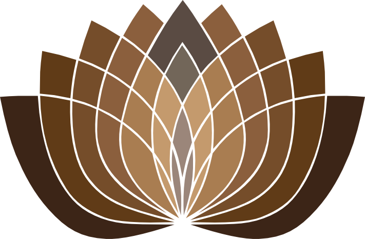

<!doctype html>
<html lang="en">
<head>
  <meta charset="utf-8">
  <meta name="viewport" content="width=device-width, initial-scale=1, maximum-scale=1, user-scalable=no, viewport-fit=cover">
  <script>(function(){try{var m=localStorage.getItem("rk-theme"),u=+localStorage.getItem("rk-theme-until");if((m!=="light"&&m!=="dark")||!u||Date.now()>=u){m="auto";localStorage.removeItem("rk-theme");localStorage.removeItem("rk-theme-until");}var h=new Date().getHours();var day=(m==="auto")?(h>=6&&h<18):(m==="light");var t=day?"paper":"night";var r=document.documentElement;r.setAttribute("data-theme",t);r.setAttribute("data-theme-mode",m);}catch(e){}})();</script>
  <meta name="theme-color" content="#1f1a14">
  <title>Rideekanda Forest Monastery</title>

  <!-- Remember kiosk mode at the launch page so QR codes etc. stay enabled
       as visitors navigate to inner pages (some kiosk launchers don't report
       a display-mode on every page). ?kiosk=1 forces on, ?kiosk=0 off. -->
  <script>
    (function () {
      try {
        var p = new URLSearchParams(location.search).get("kiosk");
        var mm = window.matchMedia;
        var k = (mm && (mm("(display-mode: standalone)").matches ||
                        mm("(display-mode: fullscreen)").matches ||
                        mm("(display-mode: minimal-ui)").matches)) ||
                window.navigator.standalone === true;
        if (p === "1" || k) localStorage.setItem("rk-kiosk", "1");
        if (p === "0") localStorage.removeItem("rk-kiosk");
      } catch (e) {}
    })();
  </script>

  <!-- PWA / kiosk install: standalone display = no browser URL bar -->
  <link rel="manifest" href="../manifest.webmanifest">
  <link rel="icon" href="/favicon.ico" sizes="any">
  <link rel="icon" type="image/png" sizes="64x64" href="../app/favicon-64.png?v=2">
  <link rel="apple-touch-icon" href="../app/apple-touch-icon.png?v=2">
  <meta name="mobile-web-app-capable" content="yes">
  <meta name="apple-mobile-web-app-capable" content="yes">
  <!-- "black", not "black-translucent": translucent runs the page under the
       status bar, where iOS dims and blurs whatever is beneath it. -->
  <meta name="apple-mobile-web-app-status-bar-style" content="black">
  <meta name="apple-mobile-web-app-title" content="Rideekanda">

  <link rel="preconnect" href="https://fonts.googleapis.com">
  <link rel="preconnect" href="https://fonts.gstatic.com" crossorigin>
  <link rel="stylesheet" href="https://fonts.googleapis.com/css2?family=Cormorant+Garamond:ital,wght@0,300;0,400;0,500;0,600;1,400;1,500&family=Spectral:ital,wght@0,300;0,400;0,500;0,600;1,400&family=Noto+Serif+Sinhala:wght@400;600&display=swap">

  <style>
    /* ─────────────────────────────────────────────────────────
       Day / night, on the site's own tokens. eco-theme.js sets
       data-theme on <html> — "paper" by day, "night" after six —
       and the toggle it injects lets anyone override it.
       ───────────────────────────────────────────────────────── */
    :root, :root[data-theme="night"] {
      /* One tonal scale, stepping up from the background in its own hue,
         so the cards read as the page rather than as patches on it. */
      --bg:#1f1a14; --bg-deep:#16120d; --card:#29221a; --card-2:#31291f;
      --ink:#f3ecdb; --ink-dim:#d8ccb4; --muted:#a6977c;
      --line:#3a3025; --line-soft:#4b4031;
      --accent:#c79a5c; --accent-ink:#c79a5c; --accent-soft:#e0b76a;
      --paper:#f3ecdb; --paper-ink:#1f1a14; --paper-muted:#5c5141;
      --invert:#1f1a14; --invert-ink:#f3ecdb;
      --t-hero:#534330;  --t-book:var(--card); --t-dana:var(--card);   --t-contact:var(--card);
      --t-gallery:var(--card); --t-videos:var(--card); --t-news:var(--card); --t-reviews:var(--card);
      --t-chip:#3a3024;  --t-sel:#604e38;   --t-dark:var(--card);   --t-shade:var(--card);
      --t-seg:#3c3125;   --t-seg-done:#8a6f4e;
      color-scheme: dark;
    }
    :root[data-theme="paper"] {
      /* The same idea on paper: plain surfaces lift toward white as the
         rest of the site does, and the feature tiles warm gently down. */
      --bg:#f4ede0; --bg-deep:#ece3d1; --card:#fbf6ec; --card-2:#f7f0e2;
      --ink:#1f1a14; --ink-dim:#463d31; --muted:#645a4a;
      --line:#e6dcc6; --line-soft:#d8cbb2;
      --accent:#a3763c; --accent-ink:#7f5726; --accent-soft:#c79a5c;
      --paper:#fdfbf6; --paper-ink:#1f1a14; --paper-muted:#5c5141;
      --invert:#2a241c; --invert-ink:#f3ecdb;
      --t-hero:#e4d3b4;  --t-book:var(--card); --t-dana:var(--card);   --t-contact:var(--card);
      --t-gallery:var(--card); --t-videos:var(--card); --t-news:var(--card); --t-reviews:var(--card);
      --t-chip:#f2e9d9;  --t-sel:#dcc69d;   --t-dark:var(--card);   --t-shade:var(--card);
      --t-seg:#e9e0cf;   --t-seg-done:#c8ab7e;
      color-scheme: light;
    }
    /* Libraries: five equal cards rather than pills that wrap and strand
       one on a line of its own. */
    .libcard { display: flex; flex-direction: column; align-items: center;
               justify-content: center; gap: 7px; padding: 10px 8px;
               border-radius: 16px; background: var(--t-chip);
               border: 1px solid var(--line); color: var(--ink);
               text-decoration: none; text-align: center;
               transition: transform .18s ease, background-color .2s ease; }
    .libcard:active { transform: scale(.97); background: var(--t-sel); }
    .libcard svg { width: 26px; height: 26px; stroke: var(--accent); flex: none; }
    .libcard .en  { font-size: 16px; font-weight: 500; line-height: 1.2; }
    .libcard .sub { font-size: 12.5px; color: var(--muted); line-height: 1.25; }

    /* The lotus mark comes in a light and a dark colourway; the page shows
       whichever reads against the current background. */
    .lotus-paper { display: none; }
    :root[data-theme="paper"] .lotus-night { display: none; }
    :root[data-theme="paper"] .lotus-paper { display: block; }

  </style>
  <style>
    /* ─────────────────────────────────────────────────────────
       One layout, in ordinary flow, reflowed from a phone up to a
       desktop. Nothing is drawn at a fixed size and scaled.
       ───────────────────────────────────────────────────────── */
    html, body { margin: 0; background: var(--bg); overscroll-behavior-y: none;
                 -webkit-text-size-adjust: 100%; }
    body { font-family: 'Spectral', Georgia, serif; color: var(--ink); }
    /* Inset by the safe area: on iOS the page runs under the status bar, and
       anything beneath it is dimmed and blurred by the system. */
    #fit { padding: env(safe-area-inset-top,  0px) env(safe-area-inset-right, 0px)
                   env(safe-area-inset-bottom,0px) env(safe-area-inset-left,  0px); }

    a { color: var(--accent-soft); }
    a:hover { color: var(--ink); }
    button { font: inherit; color: inherit; border: 0; margin: 0; cursor: pointer;
             text-align: left; background: none; -webkit-tap-highlight-color: transparent; }
    .si { font-family: 'Noto Serif Sinhala', Georgia, serif; }

    /* A long cross-fade leaves the two photos visibly ghosted over each
       other; .8s reads as a change rather than a double exposure. The slow
       scale is the Ken Burns drift and stays long. */
    .slide { transition: opacity .8s ease, transform 12s ease-out;
             will-change: opacity, transform; }
    .libtile { transition: background-color .25s ease, color .25s ease, transform .18s ease; }
    .libtile:active { transform: scale(.98); }

    @keyframes segPulse { 0%, 100% { opacity: 1 } 50% { opacity: .6 } }
    .seg-now { animation: segPulse 2.4s ease-in-out infinite; }

    @media (prefers-reduced-motion: reduce) {
      .slide, .libtile { transition: none; }
      .seg-now  { animation: none; }
    }


    /* ─────────────────────────────────────────────────────────
       The layout itself: real type sizes, one thumb's reach on a
       phone, widening into columns on a landscape screen and a
       desktop.
       ───────────────────────────────────────────────────────── */
    .k { display: none !important; }

    .m-wrap { max-width: 640px; margin: 0 auto;
              padding: 0 14px calc(28px + env(safe-area-inset-bottom, 0px)); }

    /* header ------------------------------------------------- */
    .m-head { position: sticky; top: 0; z-index: 30; background: var(--bg);
              padding: calc(10px + env(safe-area-inset-top, 0px)) 14px 10px;
              border-bottom: 1px solid var(--line); }
    /* The mark and the name centre on the row; the Explore button is taken
       out of the flow so it cannot push them off centre. */
    .m-head-row { position: relative; max-width: 640px; margin: 0 auto;
                  display: flex; align-items: center; justify-content: center;
                  min-height: 44px; }
    .m-head-row .m-pill { position: absolute; left: 0; top: 50%;
                          transform: translateY(-50%); }
    /* The reserved gutters keep the brand off the Explore button while
       leaving it centred on the row; the name sizes to what is left. */
    .m-brand { display: flex; align-items: center; gap: 9px; min-width: 0;
               padding: 0 48px; }
    .m-logo { height: 34px; width: auto; flex: none; }
    .m-name { min-width: 0; text-align: center; }
    .m-name b { display: block; font-family: 'Cormorant Garamond', serif;
                font-size: 16px; font-weight: 600; line-height: 1.15;
                white-space: nowrap; overflow: hidden; text-overflow: ellipsis; }
    .m-name span { display: block; font-size: 11.5px; color: var(--muted);
                   white-space: nowrap; overflow: hidden; text-overflow: ellipsis; }
    /* the location would push the Sinhala name out of a phone-width header,
       and it is on the Contact card anyway */
    .m-name .m-loc { display: none; }
    @media (min-width: 700px) { .m-name .m-loc { display: inline; } }
    .m-pill { flex: none; display: flex; align-items: center; gap: 6px;
              height: 38px; padding: 0 12px; border-radius: 999px;
              background: var(--card); border: 1px solid var(--line);
              font-size: 14px; font-weight: 600; color: var(--ink); }
    .m-pill svg, .m-pill span[aria-hidden] { width: 20px; height: 20px; color: var(--accent-ink); }
    .m-clock { text-align: right; line-height: 1.1; }
    .m-clock b { display: block; font-size: 19px; font-weight: 600;
                 font-variant-numeric: tabular-nums; }
    .m-clock span { display: block; font-size: 11px; color: var(--muted);
                    white-space: nowrap; border-bottom: 1px dotted var(--line-soft); }
    @media (max-width: 379px) { .m-logo { display: none; } }

    /* hero --------------------------------------------------- */
    /* The cap only bites on a short screen — a phone held sideways — where a
       16:10 band would otherwise fill most of the view before anything else. */
    .m-hero { position: relative; margin: 14px 0; border-radius: 18px;
              overflow: hidden; aspect-ratio: 16 / 10; max-height: 44vh;
              background: var(--card); }
    .m-hero img { position: absolute; inset: 0; width: 100%; height: 100%;
                  object-fit: cover; }

    /* weather + date, as a pair of cards under the hero ------ */
    .m-status { display: grid; grid-template-columns: 1fr 1fr; gap: 11px;
                margin-bottom: 14px; }
    .m-stat { display: flex; flex-direction: column; align-items: center;
              justify-content: center; gap: 7px; padding: 13px 15px;
              border-radius: 18px; background: var(--card); border: 1px solid var(--line);
              color: var(--ink); text-align: center; }
    .m-stat:active { transform: scale(.975); }
    .m-stat-head { display: flex; align-items: baseline; justify-content: center;
                   gap: 7px; font-size: 11px;
                   letter-spacing: .14em; text-transform: uppercase; color: var(--accent-ink);
                   font-weight: 600; }
    .m-stat-head i { font-style: normal; font-size: 11px; letter-spacing: 0;
                     text-transform: none; color: var(--muted); }
    .m-stat-main { display: flex; align-items: center; justify-content: center; gap: 9px; }
    .m-stat-main .ico { width: 30px; height: 30px; color: var(--accent-ink); flex: none; }
    .m-stat-main b { font-size: 29px; font-weight: 500; line-height: 1;
                     font-variant-numeric: tabular-nums; }
    .m-stat-sub { font-size: 12.5px; color: var(--muted); white-space: nowrap;
                  overflow: hidden; text-overflow: ellipsis; }

    /* now on retreat ----------------------------------------- */
    .m-now { width: 100%; text-align: left; background: var(--card);
             border-radius: 18px; padding: 13px 15px; margin-bottom: 14px; }
    .m-now-top { display: flex; align-items: center; gap: 8px; margin-bottom: 8px; }
    .m-now-top b { font-family: 'Cormorant Garamond', serif; font-size: 19px;
                   font-weight: 600; }
    .m-now-top i { font-style: normal; font-size: 12px; color: var(--ink-dim); }
    .m-now-main { display: flex; align-items: baseline; justify-content: space-between;
                  gap: 10px; }
    .m-now-main b { font-family: 'Cormorant Garamond', serif; font-size: 25px;
                    font-weight: 600; line-height: 1.1; }
    .m-now-main b i { font-family: 'Spectral', Georgia, serif; font-style: normal;
                      font-size: 11px; font-weight: 600; letter-spacing: .14em;
                      text-transform: uppercase; color: var(--accent-ink);
                      margin-right: 9px; vertical-align: middle; }
    .m-now-main span { font-size: 12.5px; color: var(--ink-dim); text-align: right; }
    .m-bars { display: flex; gap: 3px; margin-top: 10px; }
    .m-bars i { flex: 1; height: 7px; border-radius: 999px; }

    /* tiles -------------------------------------------------- */
    /* grid-auto-rows: 1fr keeps every row the height of the tallest, so the
       photo cards and the plain ones come out identical. */
    .m-grid { display: grid; grid-template-columns: 1fr 1fr; gap: 11px;
              grid-auto-rows: 1fr; }
    .m-tile { display: flex; flex-direction: column; align-items: center;
              justify-content: center; gap: 12px; min-height: 112px; padding: 15px;
              border-radius: 18px; background: var(--card); color: var(--ink);
              text-decoration: none; text-align: center; }
    .m-tile:active { transform: scale(.975); }
    /* The tiles run 140-180px tall but hold only ~70px of text, so a small
       glyph left them looking hollow. */
    .m-tile svg { width: 54px; height: 54px; stroke: var(--accent-ink); stroke-width: 1.1; }
    .m-tile b { display: block; font-family: 'Cormorant Garamond', serif;
                font-size: 21px; font-weight: 600; line-height: 1.1; }
    .m-tile span { display: block; font-size: 12.5px; color: var(--muted); margin-top: 2px; }

    .m-sect { font-size: 11.5px; letter-spacing: .15em; text-transform: uppercase;
              color: var(--accent-ink); font-weight: 600; margin: 20px 0 9px; }
    .m-chips { display: flex; flex-wrap: wrap; gap: 8px; }
    .m-chip { padding: 9px 14px; border-radius: 999px; background: var(--line);
              color: var(--ink); font-size: 13.5px; text-decoration: none;
              line-height: 1.25; }
    .m-chip span { display: block; font-size: 11px; color: var(--ink-dim); }
    .m-foot { text-align: center; font-size: 11.5px; color: var(--muted); margin-top: 22px; }

    /* Libraries on the phone: the same cards as the kiosk, two across, with
       the last spanning the row so none is left stranded on its own. */
    .m-sect-row { display: flex; align-items: baseline; justify-content: space-between;
                  gap: 12px; margin: 20px 0 9px; }
    .m-sect-row .m-sect { margin: 0; }
    .m-scan { display: inline-flex; align-items: center; gap: 5px; height: 34px;
              padding: 0 13px; border-radius: 999px; background: var(--card-2);
              border: 1px solid var(--line); color: var(--ink);
              font-size: 13px; font-weight: 600; flex: none; }
    .m-scan svg { width: 15px; height: 15px; }
    .m-libgrid { display: grid; grid-template-columns: 1fr 1fr; gap: 11px; }
    .m-libgrid .libcard { min-height: 98px; padding: 14px 10px; }
    .m-libgrid .libcard:last-child { grid-column: 1 / -1; min-height: 72px; }


    /* Landscape and desktop: the same layout, given more room. Ten tiles go
       two-up on a phone and five-up once there is width for it, so neither
       arrangement leaves a half-empty row. */
    @media (min-width: 700px) {
      .m-wrap, .m-head-row, .m-sheet-in { max-width: 1120px; }
      .m-grid    { grid-template-columns: repeat(5, minmax(0, 1fr)); gap: 13px; }
      .m-libgrid { grid-template-columns: repeat(5, minmax(0, 1fr)); }
      .m-libgrid .libcard:last-child { grid-column: auto; min-height: 98px; }
      .m-hero    { aspect-ratio: 24 / 9; }
      .m-head    { padding-left: 24px; padding-right: 24px; }
      .m-wrap    { padding-left: 24px; padding-right: 24px; }
      .m-name b  { font-size: 22px; }
      .m-brand   { padding: 0 60px; }
      .m-tile b  { font-size: 19px; }
      .m-tile svg { width: 50px; height: 50px; }
    }
    @media (min-width: 1100px) {
      /* wide enough that a 24:9 hero would dominate; make it a band */
      .m-hero { aspect-ratio: 32 / 9; }
    }
    /* sheets ------------------------------------------------- */
    .m-sheet { position: fixed; inset: 0; z-index: 60; background: var(--bg);
               overflow-y: auto; -webkit-overflow-scrolling: touch;
               padding: 0 14px calc(28px + env(safe-area-inset-bottom, 0px)); }
    .m-sheet-bar { position: sticky; top: 0; z-index: 2; background: var(--bg);
                   padding: calc(10px + env(safe-area-inset-top, 0px)) 0 10px;
                   display: flex; align-items: center; gap: 10px;
                   border-bottom: 1px solid var(--line); margin-bottom: 14px; }
    .m-back { display: flex; align-items: center; gap: 7px; height: 40px;
              padding: 0 15px 0 11px; border-radius: 999px; background: var(--card);
              font-size: 14.5px; font-weight: 600; color: var(--ink); }
    .m-back svg { width: 19px; height: 19px; stroke: currentColor; }
    .m-sheet-in { max-width: 640px; margin: 0 auto; }
    .m-kicker { font-size: 11.5px; letter-spacing: .15em; text-transform: uppercase;
                color: var(--accent-ink); font-weight: 600; }
    .m-h1 { font-family: 'Cormorant Garamond', serif; font-size: 34px;
            font-weight: 600; line-height: 1.04; margin: 6px 0 3px; }
    .m-si { font-size: 14px; color: var(--muted); }
    .m-lede { font-size: 15.5px; line-height: 1.55; color: var(--ink-dim); margin: 13px 0 0; }
    .m-facts { margin-top: 16px; border-top: 1px solid var(--line); }
    .m-fact { display: flex; gap: 12px; padding: 11px 0;
              border-bottom: 1px solid var(--line); font-size: 14px; }
    .m-fact b { flex: none; width: 108px; color: var(--muted); font-weight: 400; }
    .m-qr { display: flex; align-items: center; gap: 14px; background: var(--paper);
            color: var(--paper-ink); border-radius: 18px; padding: 13px 15px; margin-top: 18px; }
    .m-qr img { width: 92px; height: 92px; flex: none; }
    .m-qr b { font-family: 'Cormorant Garamond', serif; font-size: 18px;
              font-weight: 600; line-height: 1.15; display: block; }
    .m-qr span { font-size: 12px; color: var(--paper-muted); word-break: break-all; }
    .m-cta { display: flex; align-items: center; justify-content: center; gap: 8px;
             height: 50px; margin-top: 12px; border-radius: 999px;
             border: 1.5px solid var(--accent); color: var(--ink); font-size: 15.5px;
             font-weight: 600; text-decoration: none; }
    .m-card { display: block; background: var(--card); border-radius: 16px;
              padding: 13px; margin-top: 11px; color: var(--ink);
              text-decoration: none; text-align: left; width: 100%;
              box-sizing: border-box; }
    .m-card > div { min-width: 0; }
    .m-card h3 { font-family: 'Cormorant Garamond', serif; font-size: 19px;
                 font-weight: 600; margin: 0 0 4px; line-height: 1.15; }
    .m-card p { margin: 0; font-size: 13.5px; line-height: 1.45; color: var(--ink-dim); }

    /* "Take us with you": the QR and its label read as one object, side by
       side and centred in the slab, rather than stacked down the middle of a
       card that is far wider than either of them. */
    .m-takeus { display: flex; flex-direction: row; align-items: center;
                justify-content: center; gap: 18px; text-align: left;
                margin-top: 16px; padding: 18px 16px; }
    /* The code carries its own white ground — it has to, to stay scannable —
       so only its corners need softening against the card. */
    .m-takeus img { width: 104px; height: 104px; flex: none; border-radius: 8px; }
    .m-takeus h3 { margin: 0 0 3px; }
    .m-takeus p.m-takeus-sub { font-size: 12.5px; color: var(--muted); }
    .m-takeus p.m-takeus-sub.si { font-size: 12.5px; margin: 1px 0 0; }
    /* On the narrowest phones the label has nowhere to go beside the code. */
    @media (max-width: 359px) {
      .m-takeus { flex-direction: column; text-align: center; gap: 12px; }
    }
    .m-row { display: flex; gap: 12px; align-items: stretch; }
    .m-row img { width: 104px; height: 78px; object-fit: cover; border-radius: 11px;
                 flex: none; }
    .m-tag { display: inline-block; background: var(--accent-soft); color: var(--paper-ink);
             font-size: 10px; font-weight: 700; letter-spacing: .07em;
             text-transform: uppercase; padding: 3px 8px; border-radius: 999px;
             margin-bottom: 5px; }
    .m-shot { width: 100%; border-radius: 14px; display: block; margin-top: 12px; }
    .m-body { font-size: 15.5px; line-height: 1.65; white-space: pre-line;
              color: var(--ink-dim); margin-top: 14px; }
    .m-photo { width: 100%; border-radius: 16px; display: block; background: var(--card); }
    .m-thumbs { display: flex; gap: 7px; overflow-x: auto; margin-top: 9px;
                padding-bottom: 4px; }
    .m-thumbs button { flex: none; width: 74px; height: 54px; border-radius: 9px;
                       overflow: hidden; padding: 0; }
    .m-thumbs img { width: 100%; height: 100%; object-fit: cover; display: block; }
    .m-navrow { display: flex; align-items: center; justify-content: space-between;
                gap: 10px; margin-top: 9px; }
    .m-navrow button { width: 44px; height: 44px; border-radius: 999px;
                       background: var(--card); display: flex; align-items: center;
                       justify-content: center; }
    .m-navrow svg { width: 20px; height: 20px; stroke: var(--ink); }

    /* routine + calendar ------------------------------------- */
    .m-rt { display: flex; gap: 12px; align-items: center; padding: 12px 14px;
            border-radius: 14px; margin-top: 8px; width: 100%; text-align: left; }
    .m-rt time { flex: none; width: 104px; font-size: 13.5px; font-weight: 600;
                 font-variant-numeric: tabular-nums; }
    .m-rt b { display: block; font-family: 'Cormorant Garamond', serif;
              font-size: 19px; font-weight: 600; line-height: 1.1; }
    .m-rt small { display: block; font-size: 12px; opacity: .8; }
    .m-cal { display: grid; grid-template-columns: repeat(7, 1fr); gap: 5px; }
    .m-cal .dow { text-align: center; font-size: 10.5px; letter-spacing: .08em;
                  text-transform: uppercase; color: var(--muted); padding-bottom: 2px; }
    .m-cal button { aspect-ratio: 1; border-radius: 11px; display: flex;
                    flex-direction: column; align-items: center;
                    justify-content: center; gap: 3px; font-size: 14px;
                    font-variant-numeric: tabular-nums; }
    .m-cal .dots { display: flex; gap: 2.5px; height: 5px; }
    .m-cal .dots i { width: 5px; height: 5px; border-radius: 999px; }
    .m-cal-head { display: flex; align-items: center; justify-content: space-between;
                  margin: 4px 0 11px; }
    .m-cal-head b { font-family: 'Cormorant Garamond', serif; font-size: 22px;
                    font-weight: 600; }
    .m-legend { display: flex; flex-wrap: wrap; gap: 14px; margin-top: 13px;
                font-size: 12px; color: var(--muted); }
    .m-legend i { width: 9px; height: 9px; border-radius: 999px;
                  display: inline-block; margin-right: 5px; }

    /* weather ------------------------------------------------ */
    .m-wx-now { display: flex; align-items: center; gap: 16px; margin: 14px 0; }
    .m-wx-now .ico { width: 62px; height: 62px; color: var(--accent-ink); flex: none; }
    .m-wx-now b { font-size: 50px; font-weight: 300; line-height: 1; }
    .m-wx-grid { display: grid; grid-template-columns: 1fr 1fr; gap: 7px 18px; }
    .m-wx-grid div { display: flex; justify-content: space-between; font-size: 14px;
                     border-bottom: 1px solid var(--line); padding-bottom: 6px; }
    .m-wx-grid span { color: var(--muted); }
    .m-hours { display: flex; gap: 6px; overflow-x: auto; padding-bottom: 6px; }
    .m-hours div { flex: none; min-width: 54px; padding: 9px 4px; border-radius: 12px;
                   display: flex; flex-direction: column; align-items: center;
                   gap: 4px; font-size: 12px; }
    .m-hours .ico { width: 24px; height: 24px; color: var(--accent-ink); }
    .m-days { display: grid; grid-template-columns: repeat(5, 1fr); gap: 6px;
              border-top: 1px solid var(--line); padding-top: 11px; }
    .m-days div { display: flex; flex-direction: column; align-items: center; gap: 4px;
                  font-size: 12px; }
    .m-days .ico { width: 28px; height: 28px; color: var(--accent-ink); }
    /* Through to Microsoft's precipitation map, which cannot be embedded —
       msn.com sends x-frame-options: sameorigin. Its loc parameter is base64
       JSON holding the same coordinates the panel asks open-meteo for; move
       one and move the other, or the map and the panel disagree. */
    .m-wx-link { display: flex; align-items: center; justify-content: center;
                 gap: 9px; margin-top: 14px; padding: 12px 16px;
                 border-radius: 999px; background: var(--card);
                 border: 1px solid var(--line); color: var(--ink);
                 font-size: 13.5px; font-weight: 600; text-decoration: none; }
    .m-wx-link svg { width: 18px; height: 18px; stroke: var(--accent-ink); }
    .m-ico svg { width: 100%; height: 100%; display: block; }

    /* inline weather glyphs */
    span[style*="color:var(--accent-ink)"] > svg { width: 100%; height: 100%; display: block; }
  </style>
</head>
<body>
  <div id="fit"><div id="stage"></div></div>
  <script>
var PREVIEW = {"monastery": {"sections": [{"h": "About the monastery", "t": "Rideekanda — “Silver Hill” — is a Buddhist meditation training centre on a serene mountain top in Yatawatta, Matale. Its mild climate and forested calm offer tranquillity of mind and body. Its monks rise from the same noble order that first committed the Tripiṭaka to writing in King Walagamba’s time."}, {"h": "How we teach", "t": "A goal-oriented, systematic training based on the Buddha’s teaching of Samatha and Vipassanā — a progressive exposition of the Dhamma with a personalised meditation subject (Kammaṭṭhāna) for each practitioner, through residential retreats and online programmes."}, {"h": "Built over eight years, together", "t": "Since 2017, led by Ven. Homagama Rewatha Thero and supported by the village community, meditation practitioners and generous donors, Rideekanda has grown into a serene sanctuary for meditation and residential retreats — and it continues to grow."}, {"h": "Our teachers", "t": "Royal Paṇḍita Ven. Anuradhapura Ariyajeewa Thero, Abbot and Meditation Teacher, and Ven. Homagama Rewatha Thero, Meditation Teacher and Administrator — teachers with years of practice in the remote forests of Sri Pada, Anuradhapura and Polonnaruwa."}, {"h": "Keeping the ancient tradition", "t": "The resident monks continue to prepare their robes, hold the kaṭhina ceremonies and walk the alms round (piṇḍapāta) as they were practised in ancient times."}, {"h": "Planning a visit", "t": "Please contact us first — the forest road is steep. You can join a scheduled programme, sit for a single day, meet an instructor by appointment, offer alms on a booked date, or volunteer your help."}]}, "retreat": {"sections": [{"h": "A sanctuary of stillness", "t": "Residential retreats are the foundation of training at Rideekanda. Men and women — including monks and nuns — practise together in a lush, ancient forest, developing mental clarity and an unshakeable mind."}, {"h": "Training methodology", "t": "Systematic teaching of the Tipiṭaka, analytical study of Dhamma and discipline, and personalised meditation instruction — with one-to-one sessions so every practitioner gets the guidance they need."}, {"h": "A progressive journey to insight", "t": "The 7-day core retreat unfolds in three movements: Concentration through breath meditation (Ānāpānasati) and the jhāna states; Body contemplation; and Vipassanā insight, seeing arising and passing away (udayabbaya-ñāṇa) with walking meditation."}, {"h": "Life at the retreat", "t": "Simple, comfortable rooms — private single, private double or shared dormitory. Wholesome vegetarian meals from local ingredients are shared in the dining hall: breakfast and lunch, with a light evening soup or porridge."}, {"h": "Taught as Dāna", "t": "The teaching follows a 2,500-year tradition of giving. Participants are invited to contribute toward food and lodging — and if cost is a barrier, we will work it out together. All levels are welcome."}]}, "book": {"sections": [{"h": "Step into the forest. Step into the practice.", "t": "Reserve a place for stillness, study and meditation in Matale. Please review the retreat details first, and contact us well in advance to secure your preferred dates."}, {"h": "Step 1 — Choose a retreat", "t": "Live availability is listed on WeTravel. Choose your programme, dates and accommodation; confirmation is sent by email. Please read the terms — deposits, cancellation and refunds, health and suitability — before booking."}, {"h": "Step 2 — Reserve your place", "t": "Book online, or speak with our coordinator on WhatsApp or phone at +94 74 225 2980 — the fastest response. You can also write to rideekanda@gmail.com with your intended dates, prior experience and any questions."}]}, "contact": {"sections": [{"h": "We would be glad to hear from you", "t": "Call or WhatsApp +94 74 225 2980, or email rideekanda@gmail.com. The office is open daily from 8:30 am to 5:00 pm."}, {"h": "Find your way to the hillside", "t": "The monastery sits on Silver Hill in the green, peaceful hills of Yatawatta — Rideekanda Forest Monastery, Udasgiriya, Matale 21051, Sri Lanka. The forest road is steep, so please contact us before visiting and we will guide you."}, {"h": "Stay in touch", "t": "Subscribe on the website for news of upcoming retreats, observances and events, and follow the monastery on Facebook, Instagram and YouTube."}]}, "gallery": {"photos": [], "sections": [{"h": "Life on Silver Hill", "t": "More than a hundred photographs of the forest, the meditation halls and kutis, sunsets over the Matale hills, and the people who practise here. Scan the code to browse them all on your phone."}]}, "videos": {"sections": []}, "projects": {"sections": [{"sub": "road", "h": "Road Project · මාර්ග ව්‍යාපෘතිය", "t": "Paving the 2,000 ft concrete road to the monastery — you can pledge the road by the linear foot."}, {"sub": "herbal", "h": "Herbal Plant Planting · ඖෂධ පැළ රෝපණය", "t": "Replanting Sri Lanka’s medicinal trees and herbs across the monastery grounds — choose a plant, bring it and plant it yourself."}, {"sub": "threestory", "h": "ThreeStory Building · තෙමහල් ගොඩනැගිල්ල", "t": "A three-storey building with a meditation hall and accommodation, presented on the website as an interactive 3D model."}, {"sub": "cafe", "h": "Library Café · පුස්තකාල කැෆේ", "t": "A contemplative library and café space, with furniture, joinery and interiors designed for the monastery grounds."}, {"sub": "requirements", "h": "Monastery Requirements · ආරණ්‍ය අවශ්‍යතා", "t": "The items and resources the monastery currently needs, and how you can help provide them."}]}, "donate": {"sections": [{"h": "Support the monastery", "t": "The teachings are offered freely as Dāna. Your generosity supports the monastery and its meditation community."}, {"h": "Two ways to give", "t": "Pay by card, Apple Pay or Google Pay on the secure payment page — in 15+ currencies including USD, EUR and GBP, with no account or login needed — or give by bank transfer using the account details on the website."}, {"h": "Other offerings", "t": "You can also offer alms on a date booked in advance, or volunteer your help at the monastery."}, {"h": "Thank you", "t": "Thank you for your kindness, generosity and support. May this offering bring blessings, peace and well-being to all."}]}, "reviews": {"sections": [{"h": "“A truly enriching experience”", "t": "The atmosphere was incredibly peaceful, making it the perfect place to step away from the noise of daily life."}, {"h": "“I came with a busy mind and left with a quiet one”", "t": "The location is breathtaking, with beautiful views and a deeply peaceful atmosphere. The schedule is rigorous but compassionate."}, {"h": "“Practical, profound, and full of metta”", "t": "The forest setting, the simplicity of the kuti and the rhythm of the day all support the practice. The Bhante’s Dhamma talks were the highlight."}, {"h": "“Grounded in the suttas”", "t": "Beginners are welcomed without condescension and experienced practitioners are challenged. The food is simple and nourishing. Highly recommended."}]}, "home": {"sections": [{"h": "Everything in one place", "t": "The monastery and its teachers, the 7-day retreat and booking, news and events, photo and video galleries, projects, Dāna, reviews, and the e-book, audio and Dhamma-talk libraries."}, {"h": "Rideekanda Forest Monastery", "t": "A Theravāda forest monastery in the Sri Lankan Forest Tradition at Udasgiriya, Yatawatta, Matale — offering residential retreats in Concentration and Vipassanā."}]}};
var PAGE_SHOTS = {"home": "kiosk/496c42755a37c313ba8d6e20f5bde4cd.jpg", "monastery": "kiosk/7bcdd2ed74fb25f891ec5e52a22fe9ba.jpg", "retreat": "kiosk/ab040284b450deac689a7be3400b00ce.jpg", "book": "kiosk/a895acede664f4db9b10f934c8a14906.jpg", "gallery": "kiosk/a8c670f1d9f60876f1931391903d8bae.jpg", "videos": "kiosk/72026bf6c3d4bd7899485a8015d593ca.jpg", "projects": "kiosk/50650655bb4b3feb019ac019b31263aa.jpg", "donate": "kiosk/bacdf12b2a9f7fcc2c26b28a9a52b479.jpg", "reviews": "kiosk/86476125b94c59d9180b323cc95bc3ec.jpg", "contact": "kiosk/e0ca81dd71c30f9207b2f16572ea3a83.jpg", "news": "kiosk/ba2e146cac03ed74b27d0a64528a70ca.jpg", "libraries": "kiosk/eadb0ff0a8a3115364acdad4b1b3d37a.jpg"};
var PROJECTS = {"road": {"feat": "kiosk/18eb3bdaf665fd0d4a0aa9a2eea0d973.jpg", "title": "Road Project", "si": "මාර්ග ව්‍යාපෘතිය", "path": "projects/road-project/", "shot": "kiosk/a6bfa2bf4c958eb9b4dbd51fee322f9e.jpg", "qr": "kiosk/18ac2901e7481e59f7d81f2648dfb6d8.svg"}, "herbal": {"feat": "kiosk/4359d6d65ae2368ac70bac547ffb875e.jpg", "title": "Herbal Plant Planting", "si": "ඖෂධ පැළ රෝපණය", "path": "projects/herbal-plants/", "shot": "kiosk/fd1aee520e6c78e5ec899dc4f593fb8b.jpg", "qr": "kiosk/ddb6c40ab513522ff4df8dd699259970.svg"}, "threestory": {"feat": "kiosk/fe126df92dfc0add690bbd2a9d8a721f.jpg", "title": "ThreeStory Building", "si": "තෙමහල් ගොඩනැගිල්ල", "path": "projects/threestory/", "shot": "kiosk/c3162af0b9e17ee735783e83fb7bf2d1.jpg", "qr": "kiosk/fab5b5f0a98f2a11e073ea1cc6cf9a84.svg"}, "cafe": {"feat": "kiosk/d12464643a8efb6506dd72833cbfd0c6.jpg", "title": "Library Café", "si": "පුස්තකාල කැෆේ", "path": "projects/library-cafe/", "shot": "kiosk/1bd83207ff2b28cd74d57f3d02d9329d.jpg", "qr": "kiosk/e2e81c7459290820c6fb8a2ec86bc401.svg"}, "requirements": {"feat": "kiosk/2f95533381810ea22f408cebab30013d.jpg", "title": "Monastery Requirements", "si": "ආරණ්‍ය අවශ්‍යතා", "path": "requirements/", "shot": "kiosk/bf6c45b4292a7061930a6a045c03133d.jpg", "qr": "kiosk/7a1aedb9521f5d38b9879de8e722640a.svg"}};
var VIDEOS = [{"title": "Wisdom in Silence @ Rideekanda Forest Monastery, Sri Lanka", "date": "April 2025", "href": "https://www.youtube.com/watch?v=toTmlQMYw-A", "thumb": "kiosk/1a8d42835a77041912acc4c0ca7b48eb.jpg"}, {"title": "Galpaya Rock: Stunning 360° FPV Footage", "date": "October 2024", "href": "https://www.youtube.com/watch?v=N71im0iGVEg", "thumb": "kiosk/ad035e0f95eba5e5f6d65fbbcb5df93f.jpg"}, {"title": "Aerial Serenity @Rideekanda Forest Monastery", "date": "June 2024", "href": "https://www.youtube.com/watch?v=pD2NX1HZ_EU", "thumb": "kiosk/2c4365fa7cb0f47021b82c2f4c40ed20.jpg"}, {"title": "පැවදි පුහුණු වැඩසටහන @ රිදීකන්ද ආරණ්‍යය සේනාසනය, උඩස්ගිරිය, මාතලේ.", "date": "July 2023", "href": "https://www.youtube.com/watch?v=Xo7lm4k5OZM", "thumb": "kiosk/e9a7762a12d1de20f7bd707fd4745589.jpg"}, {"title": "තාවකාලික පැවදි පුහුණු වැඩසටහන (4 වන වැඩසටහන) | Ordination Program @RideekandaForestMonastery", "date": "May 2023", "href": "https://www.youtube.com/watch?v=EiKJyo710bU", "thumb": "kiosk/be4df52cc2b025743195da4086477294.jpg"}, {"title": "Jungle Alms Round: An Insight into Buddhist Monastic Life @ Rideekanda Forest Monastery", "date": "May 2023", "href": "https://www.youtube.com/watch?v=BsF73dsqGSY", "thumb": "kiosk/5cc8e26e5f95b00463d34bfc7b6a68d6.jpg"}, {"title": "Escape to Peace & Serenity @ Rideekanda Forest Monastery | Meditation Retreat", "date": "March 2023", "href": "https://www.youtube.com/watch?v=qjIoTPK-OEk", "thumb": "kiosk/a209f8d3ba203963e65a7bd797a9c122.jpg"}, {"title": "තාවකාලික පැවදි පුහුණු වැඩසටහන | රිදීකන්ද ආරණ්‍යය | Temporary Ordination in Sri Lanka", "date": "November 2022", "href": "https://www.youtube.com/watch?v=5UQYjPuh5ZY", "thumb": "kiosk/d2e9bfcbb641926629e0d594c1eb674d.jpg"}, {"title": "ආර්ය මාර්ගයේ පළමු පියවර | EPISODE 01 @ Rideekanda Forest Monastery, Matale, Sri Lanka | (ANIMATION)", "date": "February 2022", "href": "https://www.youtube.com/watch?v=7IHbpZW8z6k", "thumb": "kiosk/099221005351d2c9d261811b92feb715.jpg"}, {"title": "Almsgiving for the Mahanayaka of the Asgiriya Chapter of Siyam Nikaya.", "date": "October 2021", "href": "https://www.youtube.com/watch?v=OgulC1xjCzY", "thumb": "kiosk/a86108a9b0fcc5e865cc031ebaa612fe.jpg"}, {"title": "Almsgiving @ Rideekanda Forest Monastery, Matale, Sri Lanka", "date": "October 2021", "href": "https://www.youtube.com/watch?v=RJ21wWbDYNk", "thumb": "kiosk/398ae69cb0162db701d86a81d4658781.jpg"}, {"title": "Monsoon Season @ Rideekanda Forest Monastery, Matale, Sri Lanka", "date": "October 2021", "href": "https://www.youtube.com/watch?v=yj9V0RJ5BUQ", "thumb": "kiosk/1c7494cfbea39f5cc2a1324ca8db0d45.jpg"}, {"title": "Maha Piritha chanting with Sinhala and Pāli Subtitles | මහ පිරිත (තුන් සුත්‍රය) සිංහල තේරුම් සහිතව", "date": "September 2021", "href": "https://www.youtube.com/watch?v=M-CaiTAlR6Y", "thumb": "kiosk/ae2ba4a1befa5383a9e6c41bdd05c404.jpg"}, {"title": "Ancient Buddhist Tradition of Making Monk's Robe | අතීත ශාසනික සම්ප්‍රදානුකූලව සකසන පඬු චීවරය | 4K", "date": "August 2021", "href": "https://www.youtube.com/watch?v=z_fitdBVhis", "thumb": "kiosk/08b34764c7f851993121f601d2a50de9.jpg"}, {"title": "පොහොය දිනයේ සිල් සමාදන් වූ ඔබගේ දවස ගතකල යුත්තේ කෙසේද? | Important Facts on Poya Day", "date": "June 2020", "href": "https://www.youtube.com/watch?v=ryBuHI2blms", "thumb": "kiosk/4d2b7d7d676def95c2437b874839eaa4.jpg"}];
var EXPLORE = [{"title": "Explore the Monastery", "items": [{"en": "Home", "si": "මුල් පිටුව", "href": "../"}, {"en": "Monastery", "si": "ආරණ්‍ය සේනාසනය", "href": "../monastery/"}, {"en": "Retreat Program", "si": "භාවනා වැඩසටහන", "href": "../retreat-center/"}, {"en": "Book Your Stay", "si": "වෙන් කරවා ගැනීම", "href": "../book-your-stay/"}, {"en": "Reviews", "si": "ඇගයීම්", "href": "../reviews/"}, {"en": "News & Events", "si": "ප්‍රවෘත්ති සහ සිදුවීම්", "href": "../news-and-events/"}, {"en": "Gallery", "si": "ඡායාරූප", "href": "../gallery/"}, {"en": "Video Gallery", "si": "වීඩියෝ", "href": "../videos/"}, {"en": "Donate", "si": "පරිත්‍යාග", "href": "../donate/"}, {"en": "Contact", "si": "සම්බන්ධ වන්න", "href": "../contact/"}]}, {"title": "Projects", "items": [{"en": "All Projects", "si": "ව්‍යාපෘති", "href": "../projects/"}, {"en": "Road Project", "si": "මාර්ග ව්‍යාපෘතිය", "href": "../projects/road-project/"}, {"en": "Herbal Planting", "si": "ඖෂධ පැළ රෝපණය", "href": "../projects/herbal-plants/"}, {"en": "ThreeStory Building", "si": "තෙමහල් ගොඩනැගිල්ල", "href": "../projects/threestory/"}, {"en": "Monastery Requirements", "si": "ආරණ්‍ය අවශ්‍යතා", "href": "../requirements/"}, {"en": "Library Café", "si": "පුස්තකාල කැෆේ", "href": "../projects/library-cafe/"}]}, {"title": "Libraries", "items": [{"en": "E-Book Library", "si": "ඊ-පොත් පුස්තකාලය", "href": "../ebooks/"}, {"en": "Dhamma Talks (English)", "si": "ධර්ම දේශනා (ඉංග්‍රීසි)", "href": "../dhamma-talks/"}, {"en": "Dhamma Talks (Sinhala)", "si": "ධර්ම දේශනා (සිංහල)", "href": "../dhamma-talks/si/"}, {"en": "Audio Library", "si": "ශ්‍රව්‍ය පුස්තකාලය", "href": "../audio-library/"}, {"en": "Retreat Documents", "si": "වැඩසටහන් ලේඛන", "href": "../retreat-docs/"}]}, {"title": "Dashboard", "items": [{"en": "Dashboard", "si": "උපකරණ පුවරුව", "href": "../dashboard/"}]}];
  </script>
  <script>
/* ──────────────────────────────────────────────────────────────
   The phone layout. Same data and the same handlers as the kiosk
   artboard — only the markup differs, so everything added to one
   reaches the other.
   ────────────────────────────────────────────────────────────── */
function viewMobile(V, H) {
  with (V) {

  var ico = {
    retreat:'<circle cx="16" cy="7" r="3"/><path d="M16 11c-3 0-5 2.5-5 6v2"/><path d="M16 11c3 0 5 2.5 5 6v2"/><path d="M5 24c3-3 7-4 11-4s8 1 11 4"/><path d="M8 27h16"/>',
    book:'<rect x="5" y="7" width="22" height="20" rx="3"/><path d="M5 13h22"/><path d="M11 4v5"/><path d="M21 4v5"/><path d="M12 20l3 3 5-6"/>',
    contact:'<path d="M16 28s-9-8.2-9-15a9 9 0 0 1 18 0c0 6.8-9 15-9 15z"/><circle cx="16" cy="13" r="3.2"/>',
    dana:'<path d="M16 12c-1.5-3-6-3-6 .5 0 3 6 6.5 6 6.5s6-3.5 6-6.5c0-3.5-4.5-3.5-6-.5z"/><path d="M3 20l5 6h10l7-5a2 2 0 0 0-2.4-3.2L18 21h-5"/>',
    gallery:'<rect x="4" y="6" width="24" height="20" rx="3"/><circle cx="11" cy="12" r="2"/><path d="M4 22l7-6 5 4 4-3 8 6"/>',
    videos:'<rect x="4" y="7" width="24" height="18" rx="4"/><path d="M14 12l6 4-6 4z"/>',
    news:'<path d="M5 7h15v19H8a3 3 0 0 1-3-3z"/><path d="M20 13h7v10a3 3 0 0 1-3 3"/><path d="M9 12h7"/><path d="M9 16h7"/><path d="M9 20h5"/>',
    projects:'<path d="M4 27h24"/><path d="M7 27V15l9-7 9 7v12"/><path d="M13 27v-7h6v7"/>',
    reviews:'<path d="M6 8h20v13H13l-6 5v-5H6z"/><path d="M11 13h10"/><path d="M11 17h6"/>',
    libraries:'<path d="M5 6h7a4 4 0 0 1 4 4v16a3 3 0 0 0-3-3H5z"/><path d="M27 6h-7a4 4 0 0 0-4 4v16a3 3 0 0 1 3-3h8z"/>',
    // a dagoba: spire, harmika, dome and its stepped terraces
    monastery:'<path d="M16 3.5v5"/><rect x="13" y="8.5" width="6" height="3.5" rx=".6"/><path d="M8 20a8 8 0 0 1 16 0"/><path d="M6 20h20"/><path d="M4.5 24h23"/><path d="M3 28h26"/>'
  };
  var S32 = function (d, cls) {
    return '<svg viewBox="0 0 32 32" fill="none" stroke="currentColor" stroke-width="1.6" ' +
           'stroke-linecap="round" stroke-linejoin="round" aria-hidden="true" class="' + (cls || '') + '">' + d + '</svg>';
  };
  var chev = '<svg viewBox="0 0 24 24" fill="none" stroke="currentColor" stroke-width="2" stroke-linecap="round" stroke-linejoin="round" aria-hidden="true"><path d="M15 5l-7 7 7 7"></path></svg>';
  var esc = function (t) {
    return String(t == null ? '' : t).replace(/[&<>"]/g, function (c) {
      return { '&': '&amp;', '<': '&lt;', '>': '&gt;', '"': '&quot;' }[c];
    });
  };
  var sheetBar = function (label, handler) {
    return '<div class="m-sheet-bar"><button class="m-back" data-h="' + H(handler) + '">' +
           chev + esc(label) + '</button></div>';
  };

  /* ── a sheet is open: it replaces the page ──────────────── */

  if (hasPost) {
    return '<div class="m-sheet">' + sheetBar('News & Events', closePost) +
      '<div class="m-sheet-in">' +
        '<span class="m-tag">' + esc(post.type) + ' · ' + esc(post.date) + '</span>' +
        '<h1 class="m-h1">' + esc(post.title) + '</h1>' +
        '' +
        (multiPhoto
          ? '<div class="m-navrow"><button data-h="' + H(prevPhoto) + '" aria-label="Previous photo">' + chev + '</button>' +
            '<span style="font-size:12.5px;color:var(--muted)">' + photoNum + ' / ' + photoCount + '</span>' +
            '<button data-h="' + H(nextPhoto) + '" aria-label="Next photo" style="transform:rotate(180deg)">' + chev + '</button></div>' +
            '<div class="m-thumbs">' + thumbs.map(function (t) {
              return '<button data-h="' + H(t.pick) + '" aria-label="Show photo ' + t.num + '" style="outline:' + t.ring + ';outline-offset:-2px;opacity:' + t.op + '">' +
                     '</button>';
            }).join('') + '</div>'
          : '') +
        '<div class="m-body">' + esc(post.body) + '</div>' +
      '</div></div>';
  }

  if (hasProj) {
    return '<div class="m-sheet">' + sheetBar('Projects', closeProj) +
      '<div class="m-sheet-in">' +
        '<div class="m-kicker">Project</div>' +
        '<h1 class="m-h1">' + esc(proj.title) + '</h1>' +
        '<div class="m-si">' + esc(proj.si) + '</div>' +
        '<div class="m-qr">' +
          '<div><b>Scan to open on your phone</b><span>' + esc(proj.urlShort) + '</span></div></div>' +
        '' +
      '</div></div>';
  }

  if (hasCur) {
    var body = '';
    if (cur.showPage) {
      body = '';
    } else if (cur.showNews) {
      body = '<div class="m-sect">Latest from rideekanda.com</div>' + news.map(function (n) {
        return '<button class="m-card" data-h="' + H(n.pick) + '"><div class="m-row">' +
          '' +
          '<div style="min-width:0"><span class="m-tag">' + esc(n.type) + '</span>' +
          '<h3>' + esc(n.title) + '</h3><p>' + esc(n.date) + '</p></div></div></button>';
      }).join('');
    } else if (cur.showLib) {
      body = cur.libs.map(function (l) {
        return '<a class="m-card" href="' + l.url + '" data-h="' + H(l.pick) + '" style="background:' + l.bg + ';color:' + l.fg + '">' +
               '<h3>' + esc(l.en) + '</h3><p style="color:inherit;opacity:.8">' + esc(l.desc) + '</p></a>';
      }).join('');
    } else {
      if (cur.hasPhotos) {
        body += '<div style="display:grid;grid-template-columns:1fr 1fr 1fr;gap:7px;margin-top:14px">' +
                cur.photos.map(function (p) {
                  return '';
                }).join('') + '</div>';
      }
      if (cur.hasVideos) {
        body += videos.map(function (v) {
          return '<a class="m-card" href="' + v.href + '"><div class="m-row">' +
            '' +
            '<div style="min-width:0"><h3>' + esc(v.title) + '</h3><p>' + esc(v.date) + ' · YouTube</p></div></div></a>';
        }).join('');
      }
      if (cur.facts && cur.facts.length) {
        body += '<div class="m-facts">' + cur.facts.map(function (f) {
          return '<div class="m-fact"><b>' + esc(f.k) + '</b><div>' + esc(f.v) + '</div></div>';
        }).join('') + '</div>';
      }
      body += (cur.sections || []).map(function (sec) {
        return '<a class="m-card" href="' + sec.href + '">' +
          (sec.feat ? '<div class="m-row">' +
                      '<div style="min-width:0"><h3>' + esc(sec.h) + '</h3><p>' + esc(sec.t) + '</p></div></div>'
                    : '<h3>' + esc(sec.h) + '</h3><p>' + esc(sec.t) + '</p>') + '</a>';
      }).join('');
    }

    return '<div class="m-sheet">' + sheetBar('All pages', close) +
      '<div class="m-sheet-in">' +
        '<div class="m-kicker">' + esc(cur.kicker) + '</div>' +
        '<h1 class="m-h1">' + esc(cur.title) + '</h1>' +
        '<div class="m-si">' + esc(cur.si) + '</div>' +
        '<p class="m-lede">' + esc(cur.summary) + '</p>' +
        '<div class="m-chips" style="margin-top:14px">' +
          '<button class="m-chip" data-h="' + H(showSummary) + '" style="background:' + cur.tabSumBg + ';color:' + cur.tabSumFg + '">Summary</button>' +
          '<button class="m-chip" data-h="' + H(showPage) + '" style="background:' + cur.tabPageBg + ';color:' + cur.tabPageFg + '">Page preview</button>' +
        '</div>' +
        body +
        '<div class="m-qr">' +
          '<div><b>Scan to continue on your phone</b><span>' + esc(cur.urlShort) + '</span></div></div>' +
        '<a class="m-cta" href="' + cur.url + '">Open the full page</a>' +
      '</div></div>';
  }

  if (hasRoutine) {
    return '<div class="m-sheet">' + sheetBar('Back', closeRoutine) +
      '<div class="m-sheet-in">' +
        '<div class="m-kicker">7-day residential retreat</div>' +
        '<h1 class="m-h1">The daily routine</h1><div class="m-si">දින චරියාව</div>' +
        routine.map(function (r) {
          return '<button class="m-rt" data-h="' + H(r.pick) + '" style="background:' + r.bg + ';color:' + r.fg + '">' +
            '<time>' + esc(r.range) + '</time><div style="flex:1;min-width:0"><b>' + esc(r.label) + '</b>' +
            '<small class="si">' + esc(r.si) + '</small></div>' +
            (r.isNow ? '<span class="m-tag" style="margin:0">Now</span>' : '') + '</button>';
        }).join('') +
        '<a class="m-cta" href="../retreat-center/">About the retreat</a>' +
      '</div></div>';
  }

  if (hasCal) {
    return '<div class="m-sheet">' + sheetBar('Back', closeCal) +
      '<div class="m-sheet-in">' +
        '<div class="m-kicker">Poya days, holidays &amp; retreats</div>' +
        '<h1 class="m-h1">Calendar</h1><div class="m-si">දින දර්ශනය</div>' +
        '<div class="m-cal-head"><button data-h="' + H(cal.prev) + '" aria-label="Previous month" style="width:40px;height:40px;border-radius:999px;background:var(--card)">' + chev + '</button>' +
        '<b>' + esc(cal.title) + '</b>' +
        '<button data-h="' + H(cal.next) + '" aria-label="Next month" style="width:40px;height:40px;border-radius:999px;background:var(--card);transform:rotate(180deg)">' + chev + '</button></div>' +
        '<div class="m-cal">' +
          ['Su','Mo','Tu','We','Th','Fr','Sa'].map(function (d) { return '<div class="dow">' + d + '</div>'; }).join('') +
          cal.cells.map(function (c) {
            return '<button ' + (c.day ? 'data-h="' + H(c.pick) + '"' : 'disabled') + ' aria-label="' + esc(c.aria) + '" ' +
              'style="background:' + c.bg + ';outline:' + c.ring + ';outline-offset:-2px;opacity:' + c.op + ';font-weight:' + c.fw + '">' +
              '<span>' + c.day + '</span><span class="dots">' +
              (c.dots || []).map(function (d) { return '<i style="background:' + d + '"></i>'; }).join('') +
              '</span></button>';
          }).join('') +
        '</div>' +
        '<div class="m-card" style="margin-top:13px">' + esc(cal.detail) + '</div>' +
        '<div class="m-legend"><span><i style="background:#d9a521"></i>Poya day</span>' +
        '<span><i style="background:#c0552f"></i>Public holiday</span>' +
        '<span><i style="background:#4a9d5b"></i>Retreat</span></div>' +
      '</div></div>';
  }

  if (hasWx) {
    return '<div class="m-sheet">' + sheetBar('Back', closeWx) +
      '<div class="m-sheet-in">' +
        '<div class="m-kicker">Weather · කාලගුණය</div>' +
        '<h1 class="m-h1">Rideekanda · Matale</h1>' +
        '<div class="m-wx-now"><span class="ico m-ico">' + wx.ico + '</span>' +
          '<div><b>' + wx.temp + '°</b><div class="m-si">' + esc(wx.cond) + '</div></div></div>' +
        '<div class="m-wx-grid">' +
          '<div><span>Feels like</span><b>' + wx.feels + '</b></div>' +
          '<div><span>Humidity</span><b>' + wx.hum + '</b></div>' +
          '<div><span>Wind</span><b>' + wx.wind + '</b></div>' +
          '<div><span>Rain</span><b>' + wx.rain + '</b></div>' +
          '<div><span>Sunrise</span><b>' + wx.sunrise + '</b></div>' +
          '<div><span>Sunset</span><b>' + wx.sunset + '</b></div>' +
        '</div>' +
        '<div class="m-sect">Hourly · today</div><div class="m-hours">' +
          wx.hourly.map(function (h) {
            return '<div' + (h.now ? ' data-now' : '') + ' style="background:' + h.bg + '"><span style="color:' + h.tc + ';font-weight:' + h.fw + '">' + esc(h.t) + '</span>' +
                   '<span class="ico m-ico">' + h.ico + '</span><span style="font-weight:' + h.fw + '">' + h.temp + '</span></div>';
          }).join('') +
        '</div>' +
        '<div class="m-sect">Next 5 days</div><div class="m-days">' +
          wx.days.map(function (d) {
            return '<div><span style="color:var(--muted)">' + esc(d.d) + '</span><span class="ico m-ico">' + d.ico + '</span>' +
                   '<span>' + d.hi + '</span><span style="color:var(--muted)">' + d.lo + '</span></div>';
          }).join('') +
        '</div>' +
        '<a class="m-wx-link" href="https://www.msn.com/en-us/weather/maps/precipitation/in-Rideekanda,Central-Province?loc=eyJsIjoiUmlkZWVrYW5kYSIsInIiOiJDZW50cmFsIFByb3ZpbmNlIiwiYyI6IlNyaSBMYW5rYSIsImkiOiJMSyIsImciOiJlbi11cyIsIngiOiI4MC41NjAyIiwieSI6IjcuNTM0OCJ9&amp;weadegreetype=C&amp;zoom=14" target="_blank" rel="noopener noreferrer">' +
          '<svg viewBox="0 0 24 24" fill="none" stroke="currentColor" stroke-width="1.8" stroke-linecap="round" stroke-linejoin="round" aria-hidden="true">' +
            '<path d="M4 15.5a4 4 0 0 1 1.1-7.8 5.5 5.5 0 0 1 10.6-1.2A4.2 4.2 0 0 1 20 10.6"/>' +
            '<path d="M8 19.5l-.7 1.4M12 19.5l-.7 1.4M16 19.5l-.7 1.4M20 14.5a3.5 3.5 0 0 0-3.5-3.5H15"/>' +
          '</svg>Rain radar on MSN</a>' +
        '<div class="m-foot">Updated ' + esc(wx.updated) + ' · open-meteo</div>' +
      '</div></div>';
  }

  if (hasExplore) {
    return '<div class="m-sheet">' + sheetBar('Close', closeExplore) +
      '<div class="m-sheet-in">' +
        '<h1 class="m-h1">Explore</h1><div class="m-si">රිදීකන්ද ආරණ්‍ය සේනාසනය</div>' +
        explore.map(function (g) {
          return '<div class="m-sect">' + esc(g.title) + '</div>' +
            g.items.map(function (it) {
              return '<a class="m-card" href="' + it.href + '" style="margin-top:8px">' +
                '<h3>' + esc(it.en) + '</h3><p class="si">' + esc(it.si) + '</p></a>';
            }).join('');
        }).join('') +
        '<div class="m-foot">Rideekanda Forest Monastery · Matale, Sri Lanka</div>' +
      '</div></div>';
  }

  /* ── the home screen ────────────────────────────────────── */

  var tile = function (o) {
    var tag = o.href ? 'a' : 'button';
    var attrs = o.href ? ' href="' + o.href + '"' : ' data-h="' + H(o.on) + '"';
    return '<' + tag + ' class="m-tile ' + (o.cls || '') + '"' + attrs + '>' +
      S32(ico[o.i]) +
      '<div><b>' + o.en + '</b><span class="si">' + o.si + '</span></div></' + tag + '>';
  };

  return '' +
  '<div class="m-head"><div class="m-head-row">' +
    '<button class="m-pill" data-h="' + H(openExplore) + '" aria-label="Explore Rideekanda">' +
      '<svg viewBox="0 0 24 24" fill="none" stroke="currentColor" stroke-width="2" stroke-linecap="round" aria-hidden="true"><path d="M4 7h16M4 12h16M4 17h16"/></svg></button>' +
    '<div class="m-brand">' +
      '' +
      '<div class="m-name"><b>Rideekanda Forest Monastery</b>' +
        '<span class="si">රිදීකන්ද ආරණ්‍ය සේනාසනය<span class="m-loc"> · Udasgiriya, Matale</span></span></div>' +
    '</div>' +
  '</div></div>' +

  '<div class="m-wrap">' +
    '<div class="m-hero">' +
      slides.map(function (sl, i) {
        return '';
      }).join('') +
    '</div>' +

    '<div class="m-status">' +
      '<button class="m-stat" data-h="' + H(openWx) + '" aria-label="Weather report">' +
        '<span class="m-stat-head">Weather<i class="si">කාලගුණය</i></span>' +
        '<span class="m-stat-main"><span class="ico m-ico" aria-hidden="true">' + wx.ico + '</span>' +
          '<b>' + wx.temp + '°</b></span>' +
        '<span class="m-stat-sub">' + esc(wx.cond) + '</span>' +
      '</button>' +
      '<button class="m-stat" data-h="' + H(openCal) + '" aria-label="Monastery calendar">' +
        '<span class="m-stat-head">Today<i class="si">අද</i></span>' +
        '<span class="m-stat-main"><b>' + clock + '</b></span>' +
        '<span class="m-stat-sub">' + esc(dateLabel) + '</span>' +
      '</button>' +
    '</div>' +

    '<button class="m-now" data-h="' + H(openRoutine) + '">' +
      '<div class="m-now-top">' +
        '<svg viewBox="0 0 24 24" fill="none" stroke="var(--accent-ink)" stroke-width="1.8" stroke-linecap="round" stroke-linejoin="round" aria-hidden="true" style="width:17px;height:17px"><circle cx="12" cy="12" r="9"/><path d="M12 7v5l3 2"/></svg>' +
        '<b>Daily Routine</b><i class="si">දින චරියාව</i></div>' +
      '<div class="m-now-main"><b><i>Now</i>' + esc(nowLabel) + '</b>' +
        '<span>Next: ' + esc(nextLabel) + '<br>' + nextTime + '</span></div>' +
      '<div class="m-bars">' + timeline.map(function (s) {
        return '<i class="' + s.cls + '" style="background:' + s.bg + '"></i>';
      }).join('') + '</div>' +
    '</button>' +

    '<div class="m-grid">' +
      tile({ i: 'retreat',   en: 'Retreat Program', si: 'භාවනා වැඩසටහන', href: '../retreat-center/' }) +
      tile({ i: 'monastery', en: 'The Monastery',   si: 'ආරණ්‍ය පිළිබඳ',  href: '../monastery/' }) +
      tile({ i: 'book', en: 'Book Your Stay', si: 'නවාතැන වෙන් කරන්න', href: '../book-your-stay/' }) +
      tile({ i: 'contact', en: 'Contact', si: 'සම්බන්ධ වන්න', href: '../contact/' }) +
      tile({ i: 'dana', en: 'Donate/Dāna', si: 'පරිත්‍යාග', href: '../donate/' }) +
      tile({ i: 'gallery', en: 'Gallery', si: 'ඡායාරූප', href: '../gallery/' }) +
      tile({ i: 'videos', en: 'Video Gallery', si: 'වීඩියෝ', href: '../videos/' }) +
      tile({ i: 'news', en: 'News & Events', si: 'පුවත් සහ සිදුවීම්', href: '../news-and-events/' }) +
      tile({ i: 'projects', en: 'Projects', si: 'ව්‍යාපෘති', on: open.projects }) +
      tile({ i: 'reviews', en: 'Reviews', si: 'අදහස්', href: '../reviews/' }) +
    '</div>' +

    '<div class="m-sect-row">' +
      '<span class="m-sect">Libraries · පුස්තකාල</span>' +
      '<button class="m-scan" data-h="' + H(open.libraries) + '">Scan a code' +
        '<svg viewBox="0 0 24 24" fill="none" stroke="var(--accent)" stroke-width="2" stroke-linecap="round" stroke-linejoin="round" aria-hidden="true"><path d="M9 6l6 6-6 6"/></svg>' +
      '</button>' +
    '</div>' +
    '<div class="m-libgrid">' +
      '<a class="libcard" href="../ebooks/"><svg viewBox="0 0 24 24" fill="none" stroke="currentColor" stroke-width="1.5" stroke-linecap="round" stroke-linejoin="round" aria-hidden="true"><path d="M4 5h6a3 3 0 0 1 3 3v11a2.5 2.5 0 0 0-2.5-2.5H4z"/><path d="M20 5h-6a3 3 0 0 0-3 3v11a2.5 2.5 0 0 1 2.5-2.5H20z"/></svg><span class="en">E-Book Library</span><span class="sub si">ඊ-පොත් පුස්තකාලය</span></a>' +
      '<a class="libcard" href="../audio-library/"><svg viewBox="0 0 24 24" fill="none" stroke="currentColor" stroke-width="1.5" stroke-linecap="round" stroke-linejoin="round" aria-hidden="true"><path d="M4 14v-2a8 8 0 0 1 16 0v2"/><rect x="2.5" y="13.5" width="4" height="7" rx="2"/><rect x="17.5" y="13.5" width="4" height="7" rx="2"/></svg><span class="en">Audio Library</span><span class="sub si">ශ්‍රව්‍ය පුස්තකාලය</span></a>' +
      '<a class="libcard" href="../dhamma-talks/"><svg viewBox="0 0 24 24" fill="none" stroke="currentColor" stroke-width="1.5" stroke-linecap="round" stroke-linejoin="round" aria-hidden="true"><path d="M4 6h16v10H10l-5 4v-4H4z"/><path d="M8 10h8"/><path d="M8 13h5"/></svg><span class="en">Dhamma Talks</span><span class="sub si">ධර්ම දේශනා · English</span></a>' +
      '<a class="libcard" href="../dhamma-talks/si/"><svg viewBox="0 0 24 24" fill="none" stroke="currentColor" stroke-width="1.5" stroke-linecap="round" stroke-linejoin="round" aria-hidden="true"><path d="M3 5h13v9H9l-4 3.5V14H3z"/><path d="M19 9h2v10l-3-2.5h-6"/></svg><span class="en">ධර්ම දේශනා</span><span class="sub si">Dhamma Talks · සිංහල</span></a>' +
      '<a class="libcard" href="../retreat-docs/"><svg viewBox="0 0 24 24" fill="none" stroke="currentColor" stroke-width="1.5" stroke-linecap="round" stroke-linejoin="round" aria-hidden="true"><path d="M6 3h8l5 5v13H6z"/><path d="M14 3v5h5"/><path d="M9 13h7"/><path d="M9 17h5"/></svg><span class="en">Retreat Documents</span><span class="sub si">වැඩසටහන් ලේඛන</span></a>' +
    '</div>' +

    '<a class="m-card m-takeus" href="../">' +
      '' +
      '<div><h3>Take us with you</h3>' +
        '<p class="m-takeus-sub">Scan for the full website</p>' +
        '<p class="m-takeus-sub si">සම්පූර්ණ වෙබ් අඩවිය ස්කෑන් කරන්න</p></div></a>' +

    '<div class="m-foot">Rideekanda Forest Monastery · Udasgiriya, Matale</div>' +
  '</div>';
  }
}
  </script>
  <script>
/* ──────────────────────────────────────────────────────────────
   Rideekanda visitor kiosk.

   The layout is a 1080×1920 artboard scaled to whatever screen it
   lands on, so the monastery's vertical panel, a landscape TV and a
   phone all get the same design. Photos, news and weather are read
   live from the site rather than baked in, so the kiosk stays current
   without anyone editing this file.
   ────────────────────────────────────────────────────────────── */
(function () {
  'use strict';

  var ABS  = 'https://www.rideekanda.com/';   // what the QR codes encode
  var REL  = '../';                           // how the kiosk itself navigates
  var IDLE = 90;                              // seconds before it returns home
  var SLIDE_SECONDS = 7;

  var SLIDES = [];        // hero photos, from the gallery manifest
  var NEWS   = [];        // stories, from news-and-events/posts.js
  var WX     = null;      // live forecast, from open-meteo

  var state = {
    slide: 0, cur: null, view: 'summary', proj: null, libSel: null,
    post: null, photo: 0, routine: null, explore: false, wx: false,
    cal: false, calShift: 0, calSel: null,
    pressed: null, lpressed: null, ppressed: null,
    now: Date.now(), touched: Date.now()
  };

  var stage = document.getElementById('stage');
  var handlers = [];
  function H(fn) { handlers.push(fn); return handlers.length - 1; }
  function setState(p) { Object.assign(state, p); render(); }
  function panelOpen() {
    return !!(state.cur || state.routine != null || state.explore || state.wx || state.cal);
  }

  /* ── the daily rhythm of the 7-day retreat ──────────────────────
     These are a fallback only. daily-routine/routine-data.js is the one
     place the routine is written down, and loadRoutine() below replaces
     this list with whatever that file says, so changing the times there
     changes them here too. ──────────────────────────────────────────── */
  var S = [
    ['05:30', 'Waking', 'අවදි වීම'], ['07:00', 'Breakfast', 'උදෑසන ආහාරය'],
    ['08:00', 'Morning Dhamma', 'උදෑසන ධර්ම දේශනාව'], ['09:00', 'Meditation', 'භාවනාව'],
    ['12:00', 'Lunch', 'දිවා ආහාරය'], ['13:00', 'Afternoon rest', 'දහවල් විවේකය'],
    ['14:00', 'Meditation', 'භාවනාව'], ['16:30', 'Evening Dhamma', 'සවස ධර්ම දේශනාව'],
    ['18:00', 'Chanting & discussion', 'පිරිත් සජ්ඣායනය සහ සාකච්ඡාව'],
    ['19:00', 'Meditation', 'භාවනාව'], ['22:00', 'Night rest', 'රාත්‍රී විවේකය']
  ];
  function pad(n) { return String(n).padStart(2, '0'); }
  function mins(t) { var p = t.split(':').map(Number); return p[0] * 60 + p[1]; }

  /* ── the pages the tiles and the detail panel describe ──────── */
  var P = {
    monastery: { kicker: 'About the monastery', title: 'The Monastery', si: 'ආරාමය පිළිබඳ', path: 'monastery/', qr: 'kiosk/7f0c86cf29dc33f48199f358cecba14e.svg',
      summary: 'Rideekanda — “Silver Hill” — is a Theravāda forest monastery and meditation training centre on a hillside at Udasgiriya, Yatawatta, in the Matale District.',
      facts: [
        { k: 'Tradition', v: 'Theravāda · Sri Lankan Forest Tradition' },
        { k: 'Abbot & teacher', v: 'Royal Paṇḍita Ven. Anuradhapura Ariyajeewa Thero' },
        { k: 'Teacher & administrator', v: 'Ven. Homagama Rewatha Thero' },
        { k: 'Growth', v: 'Construction and expansion began in 2017' },
        { k: 'Visiting', v: 'Please contact us first — the forest road is steep' }
      ] },
    retreat: { kicker: 'Residential retreat centre', title: 'Retreat Program', si: 'භාවනා වැඩසටහන', path: 'retreat-center/', qr: 'kiosk/ca92ac62cd7e9cc6e3fda7be0b05ee5a.svg',
      summary: 'A 7-day residential retreat in Concentration and Vipassanā, open to men and women, lay and monastic. The teaching is offered as Dāna.',
      facts: [
        { k: 'Stage 1', v: 'Concentration — Ānāpānasati and jhāna' },
        { k: 'Stage 2', v: 'Body contemplation' },
        { k: 'Stage 3', v: 'Vipassanā insight, with walking meditation' },
        { k: 'Rooms', v: 'Private single, private double or shared dormitory' },
        { k: 'Meals', v: 'Vegetarian breakfast and lunch; light evening soup' },
        { k: 'Dates', v: 'Pre-scheduled each month · spaces are limited' }
      ] },
    book: { kicker: 'Reserve your place', title: 'Book Your Stay', si: 'ඔබේ නවාතැන වෙන් කරන්න', path: 'book-your-stay/', qr: 'kiosk/23fea43f614804d0c7a6543a10118eb0.svg', wa: true,
      summary: 'Book a retreat online, or reach us directly — WhatsApp is the fastest way to get an answer.',
      facts: [
        { k: 'Online', v: 'Secure booking through WeTravel' },
        { k: 'WhatsApp / phone', v: '+94 74 225 2980' },
        { k: 'Email', v: 'rideekanda@gmail.com' }
      ] },
    contact: { kicker: 'Get in touch', title: 'Contact', si: 'සම්බන්ධ වන්න', path: 'contact/', qr: 'kiosk/f447872f6797352155a40757aa7046d9.svg', wa: true,
      summary: 'Rideekanda Forest Monastery, Udasgiriya, Matale 21051, Sri Lanka — on Silver Hill, Yatawatta.',
      facts: [
        { k: 'Phone', v: '+94 74 225 2980' },
        { k: 'Email', v: 'rideekanda@gmail.com' },
        { k: 'Office hours', v: 'Open daily 8:30 am – 5:00 pm' },
        { k: 'Follow', v: 'Facebook · Instagram · YouTube' }
      ] },
    gallery: { kicker: 'Photographs', title: 'Gallery', si: 'ඡායාරූප', path: 'gallery/', qr: 'kiosk/9998aef11560b3a179154895eadad893.svg',
      summary: 'Photographs of the monastery, the forest and retreat life on Silver Hill.', facts: [] },
    videos: { kicker: 'Watch', title: 'Video Gallery', si: 'වීඩියෝ', path: 'videos/', qr: 'kiosk/6f24f9b4d4744495a67a892496475443.svg',
      summary: 'Videos from the monastery, with more on our YouTube channel.',
      facts: [{ k: 'YouTube', v: 'Rideekanda Forest Monastery' }] },
    news: { kicker: 'What’s happening', title: 'News & Events', si: 'පුවත් සහ සිදුවීම්', path: 'news-and-events/', qr: 'kiosk/0512d04af9390e3a0d22fe637ea40fd3.svg',
      summary: 'Upcoming programmes, retreat dates and announcements from the monastery.', facts: [] },
    projects: { kicker: 'Building the monastery', title: 'Projects', si: 'ව්‍යාපෘති', path: 'projects/', qr: 'kiosk/0ce536ca6ecd2ba6e39646665484db78.svg',
      summary: 'Construction and development work at Rideekanda, which has grown in stages since 2017.', facts: [] },
    donate: { kicker: 'Generosity', title: 'Dāna', si: 'දානය', path: 'donate/', qr: 'kiosk/08def182b762e9b0e5194f76d075cdff.svg',
      summary: 'The teachings are offered freely as Dāna. Your generosity supports the monastery and those who come to practise.',
      facts: [
        { k: 'Retreatants', v: 'Invited to contribute toward food and lodging — if cost is a barrier, we will work it out together' },
        { k: 'Offering alms', v: 'Please book a date in advance' },
        { k: 'Volunteering', v: 'Offers of labour are welcome' }
      ] },
    reviews: { kicker: 'In their words', title: 'Reviews', si: 'අදහස්', path: 'reviews/', qr: 'kiosk/174f07deaef28ed3553e399968ce70b1.svg',
      summary: 'Reflections from people who have practised at Rideekanda.', facts: [] },
    libraries: { kicker: 'Free Dhamma resources', title: 'Libraries', si: 'පුස්තකාල', path: 'ebooks/', qr: 'kiosk/d054cfb3fabdb8e42ab4015f151cacce.svg',
      summary: 'Read, listen and download — choose a library below, then scan its code to open it on your phone.', facts: [] },
    home: { kicker: 'Take us with you', title: 'Rideekanda Online', si: 'රිදීකන්ද ආරණ්‍ය සේනාසනය', path: '', qr: 'kiosk/ec2ea202af236ed9ad148ee9fb0af97a.svg',
      summary: 'Scan the code to carry every page of the monastery website home with you.',
      facts: [{ k: 'Website', v: 'www.rideekanda.com' }] }
  };

  var LIBS = [
    { id: 'ebooks',  en: 'E-Book Library',          si: 'ඊ-පොත් පුස්තකාලය',      path: 'ebooks/',        qr: 'kiosk/d054cfb3fabdb8e42ab4015f151cacce.svg', desc: 'Dhamma and meditation e-books — read online or download' },
    { id: 'audio',   en: 'Audio Library',           si: 'ශ්‍රව්‍ය පුස්තකාලය',     path: 'audio-library/', qr: 'kiosk/c87040d698a94dd94e677f7314c4b146.svg', desc: 'Guided meditation recordings in English and Sinhala' },
    { id: 'talksEn', en: 'Dhamma Talks (English)',  si: 'ධර්ම දේශනා (ඉංග්‍රීසි)', path: 'dhamma-talks/',  qr: 'kiosk/ea374a82b2a33a8cecbd2b259560d5fc.svg', desc: 'Dhamma talks in English' },
    { id: 'talksSi', en: 'Dhamma Talks (Sinhala)',  si: 'ධර්ම දේශනා (සිංහල)',    path: 'dhamma-talks/si/', qr: 'kiosk/a7da59a5c082c0052e2e102ee881867d.svg', desc: 'Dhamma talks in Sinhala' },
    { id: 'docs',    en: 'Retreat Documents',       si: 'වැඩසටහන් ලේඛන',          path: 'retreat-docs/',  qr: 'kiosk/b5df8cca074cedac25b91b1abc26be12.svg', desc: 'Documents for retreat participants' }
  ];

  /* ── weather, live from open-meteo ──────────────────────────── */
  var WX_ICONS = {
    sun:'<svg viewBox="0 0 24 24" fill="none" stroke="currentColor" stroke-width="1.7" stroke-linecap="round"><circle cx="12" cy="12" r="4.4" fill="currentColor" stroke="none"/><path d="M12 1.6v2.7M12 19.7V22.4M2.9 2.9l1.95 1.95M19.15 19.15l1.95 1.95M1.6 12h2.7M19.7 12h2.7M2.9 21.1l1.95-1.95M19.15 4.85l1.95-1.95"/></svg>',
    moon:'<svg viewBox="0 0 24 24" fill="none" stroke="currentColor" stroke-width="1.6" stroke-linecap="round" stroke-linejoin="round"><path d="M20 14.2A8 8 0 1 1 9.8 4 6.4 6.4 0 0 0 20 14.2z"/></svg>',
    partly:'<svg viewBox="0 0 24 24" fill="none" stroke="currentColor" stroke-width="1.5" stroke-linecap="round" stroke-linejoin="round"><circle cx="8" cy="7.5" r="2.6"/><path d="M8 2.6v1.4M3.5 7.5H4.9M4.6 4.1l1 1"/><path d="M9 19h8.2a3.2 3.2 0 0 0 .3-6.4 4.6 4.6 0 0 0-8.8-1A3.2 3.2 0 0 0 9 19z"/></svg>',
    cloud:'<svg viewBox="0 0 24 24" fill="none" stroke="currentColor" stroke-width="1.5" stroke-linecap="round" stroke-linejoin="round"><path d="M7 18h10a3.4 3.4 0 0 0 .4-6.8 5 5 0 0 0-9.6-1.2A3.4 3.4 0 0 0 7 18z"/></svg>',
    fog:'<svg viewBox="0 0 24 24" fill="none" stroke="currentColor" stroke-width="1.5" stroke-linecap="round"><path d="M5 9.5h12.3a3.2 3.2 0 0 0-.2-2.2 4.8 4.8 0 0 0-9-1.1"/><path d="M4 13.5h16M6 17.5h12"/></svg>',
    rain:'<svg viewBox="0 0 24 24" fill="none" stroke="currentColor" stroke-width="1.5" stroke-linecap="round" stroke-linejoin="round"><path d="M7 15h9.2a3.3 3.3 0 0 0 .3-6.6 4.7 4.7 0 0 0-9-1.1A3.3 3.3 0 0 0 7 15z"/><path d="M9 18l-1 2.4M13 18l-1 2.4M17 18l-1 2.4"/></svg>',
    snow:'<svg viewBox="0 0 24 24" fill="none" stroke="currentColor" stroke-width="1.5" stroke-linecap="round" stroke-linejoin="round"><path d="M7 14h9.2a3.3 3.3 0 0 0 .3-6.6 4.7 4.7 0 0 0-9-1.1A3.3 3.3 0 0 0 7 14z"/><path d="M9 18h.01M13 18h.01M17 18h.01M11 21h.01M15 21h.01"/></svg>',
    thunder:'<svg viewBox="0 0 24 24" fill="none" stroke="currentColor" stroke-width="1.5" stroke-linecap="round" stroke-linejoin="round"><path d="M7 14h9.2a3.3 3.3 0 0 0 .3-6.6 4.7 4.7 0 0 0-9-1.1A3.3 3.3 0 0 0 7 14z"/><path d="M13 13l-2.5 4.5h3L11 22"/></svg>'
  };
  var WX_TEXT = {0:'Clear sky',1:'Mainly clear',2:'Partly cloudy',3:'Overcast',45:'Fog',48:'Rime fog',51:'Light drizzle',53:'Drizzle',55:'Dense drizzle',56:'Freezing drizzle',57:'Freezing drizzle',61:'Light rain',63:'Rain',65:'Heavy rain',66:'Freezing rain',67:'Freezing rain',71:'Light snow',73:'Snow',75:'Heavy snow',77:'Snow grains',80:'Light showers',81:'Showers',82:'Heavy showers',85:'Snow showers',86:'Snow showers',95:'Thunderstorm',96:'Thunderstorm',99:'Thunderstorm'};
  var DOW = ['Sun','Mon','Tue','Wed','Thu','Fri','Sat'];

  function wxKey(code, isDay) {
    if (code === 0 || code === 1) return isDay ? 'sun' : 'moon';
    if (code === 2) return 'partly';
    if (code === 3) return 'cloud';
    if (code === 45 || code === 48) return 'fog';
    if ((code >= 71 && code <= 77) || code === 85 || code === 86) return 'snow';
    if (code >= 95) return 'thunder';
    if ((code >= 51 && code <= 67) || (code >= 80 && code <= 82)) return 'rain';
    return 'cloud';
  }
  function fmtHour(h) { var ap = h < 12 ? 'AM' : 'PM', x = h % 12; return (x === 0 ? 12 : x) + ap; }
  function hhmm(iso) {
    if (!iso) return '—';
    var t = iso.slice(11, 16).split(':'), h = +t[0], ap = h < 12 ? 'AM' : 'PM', x = h % 12;
    return (x === 0 ? 12 : x) + ':' + t[1] + ' ' + ap;
  }

  function loadWeather() {
    var url = 'https://api.open-meteo.com/v1/forecast?latitude=7.5348&longitude=80.5602' +
      '&current=temperature_2m,relative_humidity_2m,apparent_temperature,is_day,precipitation,weather_code,wind_speed_10m' +
      '&hourly=temperature_2m,weather_code,is_day' +
      '&daily=weather_code,temperature_2m_max,temperature_2m_min,sunrise,sunset&timezone=auto&forecast_days=5';
    fetch(url).then(function (r) { return r.json(); }).then(function (j) {
      var c = j.current, d = j.daily, Hh = j.hourly;

      // open-meteo returns the location's own clock, so "now" must come from
      // current.time — not from the screen's clock, which may be elsewhere.
      var nowIso = c.time || '';
      var nowDay = nowIso ? nowIso.slice(0, 10) : d.time[0];
      var nowH   = nowIso ? parseInt(nowIso.slice(11, 13), 10) : new Date().getHours();

      var hourly = [];
      for (var i = 0; i < Hh.time.length; i++) {
        if (Hh.time[i].indexOf(nowDay) !== 0) continue;
        var hr = parseInt(Hh.time[i].slice(11, 13), 10);
        var isNow = hr === nowH;
        hourly.push({
          t: isNow ? 'Now' : fmtHour(hr),
          temp: Math.round(isNow ? c.temperature_2m : Hh.temperature_2m[i]) + '°',
          ico: WX_ICONS[wxKey(isNow ? c.weather_code : Hh.weather_code[i], isNow ? c.is_day : Hh.is_day[i])],
          now: isNow
        });
      }

      var days = d.time.map(function (t, i) {
        return {
          d: i === 0 ? 'Today' : DOW[new Date(t + 'T00:00:00').getDay()],
          ico: WX_ICONS[wxKey(d.weather_code[i], 1)],
          hi: Math.round(d.temperature_2m_max[i]) + '°',
          lo: Math.round(d.temperature_2m_min[i]) + '°'
        };
      });

      var u = new Date();
      WX = {
        ico: WX_ICONS[wxKey(c.weather_code, c.is_day)],
        temp: Math.round(c.temperature_2m),
        cond: WX_TEXT[c.weather_code] || '',
        feels: Math.round(c.apparent_temperature) + '°',
        hum: Math.round(c.relative_humidity_2m) + '%',
        wind: Math.round(c.wind_speed_10m) + ' km/h',
        rain: (c.precipitation != null ? c.precipitation : 0) + ' mm',
        sunrise: hhmm(d.sunrise && d.sunrise[0]),
        sunset: hhmm(d.sunset && d.sunset[0]),
        hourly: hourly, days: days,
        updated: pad(u.getHours()) + ':' + pad(u.getMinutes())
      };
      render();
    }).catch(function () { /* a kiosk offline for a moment simply shows no weather */ });
  }

  /* ── the monastery calendar ─────────────────────────────────── */
  var CAL = null;                       // filled from ../calendar-data.js
  var MONTHS = ['January','February','March','April','May','June',
                'July','August','September','October','November','December'];

  function isoOf(y, m, d) { return y + '-' + pad(m + 1) + '-' + pad(d); }

  function eventsOn(di) {
    if (!CAL) return [];
    var ev = [];
    (CAL.poya || []).forEach(function (x) { if (x.date === di) ev.push({ type: 'poya', name: x.name }); });
    (CAL.holidays || []).forEach(function (x) { if (x.date === di) ev.push({ type: 'holiday', name: x.name }); });
    (CAL.retreats || []).forEach(function (r) {
      if (di >= r.start && di <= r.end) ev.push({ type: 'retreat', name: r.name, start: r.start, end: r.end });
    });
    return ev;
  }

  var DOTC = { poya: '#d9a521', holiday: '#c0552f', retreat: '#4a9d5b' };

  function fmtRange(a, b) {
    var p = a.split('-'), q = b.split('-');
    var ma = MONTHS[+p[1] - 1].slice(0, 3), mb = MONTHS[+q[1] - 1].slice(0, 3);
    return p[1] === q[1] ? ma + ' ' + (+p[2]) + '–' + (+q[2])
                         : ma + ' ' + (+p[2]) + ' – ' + mb + ' ' + (+q[2]);
  }

  function buildCalendar() {
    var base = new Date();
    var view = new Date(base.getFullYear(), base.getMonth() + state.calShift, 1);
    var y = view.getFullYear(), m = view.getMonth();
    var todayIso = isoOf(base.getFullYear(), base.getMonth(), base.getDate());
    var startDow = new Date(y, m, 1).getDay();
    var days = new Date(y, m + 1, 0).getDate();

    var cells = [];
    for (var i = 0; i < startDow; i++) {
      cells.push({ day: '', dots: [], bg: 'transparent', ring: 'none', op: 0, fw: '400', aria: '' });
    }
    for (var d = 1; d <= days; d++) {
      var di = isoOf(y, m, d), ev = eventsOn(di);
      var types = {};
      ev.forEach(function (e) { types[e.type] = 1; });
      var dots = ['poya', 'holiday', 'retreat'].filter(function (t) { return types[t]; })
                                               .map(function (t) { return DOTC[t]; });
      cells.push({
        day: d, dots: dots, iso: di,
        bg: state.calSel === di ? 'var(--t-sel)' : (types.retreat ? 'rgba(74,157,91,0.18)' : 'var(--card)'),
        ring: di === todayIso ? '2px solid var(--accent)' : 'none',
        op: 1, fw: di === todayIso ? '700' : '400',
        aria: MONTHS[m] + ' ' + d + (ev.length ? ' — ' + ev.map(function (e) { return e.name; }).join(', ') : ''),
        pick: (function (iso2) { return function () { setState({ calSel: iso2, touched: Date.now() }); }; })(di)
      });
    }

    var sel = state.calSel || todayIso;
    var selEv = eventsOn(sel);
    var sp = sel.split('-');
    var detail = !CAL
      ? 'Loading the calendar…'
      : (selEv.length
          ? MONTHS[+sp[1] - 1].slice(0, 3) + ' ' + (+sp[2]) + ' — ' + selEv.map(function (e) {
              return e.type === 'retreat' ? e.name + ' (' + fmtRange(e.start, e.end) + ')' : e.name;
            }).join(' · ')
          : MONTHS[+sp[1] - 1].slice(0, 3) + ' ' + (+sp[2]) + ' — nothing scheduled');

    return {
      title: MONTHS[m] + ' ' + y, cells: cells, detail: detail,
      prev: function () { setState({ calShift: state.calShift - 1, calSel: null, touched: Date.now() }); },
      next: function () { setState({ calShift: state.calShift + 1, calSel: null, touched: Date.now() }); }
    };
  }

  /* ── everything the template needs, rebuilt for each render ─── */
  function renderVals() {
    var d = new Date(state.now);
    var clock = pad(d.getHours()) + ':' + pad(d.getMinutes());
    var dateLabel = d.toLocaleDateString('en-GB', { weekday: 'long', day: 'numeric', month: 'long' });
    var nowM = d.getHours() * 60 + d.getMinutes();
    var idx = S.length - 1;
    for (var i = 0; i < S.length; i++) if (mins(S[i][0]) <= nowM) idx = i;
    var nxt = S[(idx + 1) % S.length];

    var open = {}, cls = {};
    Object.keys(P).forEach(function (id) {
      cls[id] = state.pressed === id ? 'pressed' : '';
      open[id] = function () {
        if (state.pressed) return;
        setState({ pressed: id });
        clearTimeout(open._t);
        open._t = setTimeout(function () {
          setState({ pressed: null, cur: id, view: 'summary', proj: null,
                     libSel: null, post: null, routine: null, touched: Date.now() });
        }, 420);
      };
    });

    var lib = {}, lcls = {};
    LIBS.forEach(function (l) {
      lcls[l.id] = state.lpressed === l.id ? 'pressed' : '';
      lib[l.id] = function () {
        if (state.lpressed) return;
        setState({ lpressed: l.id });
        clearTimeout(lib._t);
        lib._t = setTimeout(function () {
          setState({ lpressed: null, cur: 'libraries', view: 'summary',
                     libSel: l.id, routine: null, touched: Date.now() });
        }, 380);
      };
    });

    var cur = null;
    if (state.cur && P[state.cur]) {
      var p = P[state.cur], q = p, libs = [];
      if (state.cur === 'libraries') {
        var L = LIBS.find(function (l) { return l.id === (state.libSel || 'ebooks'); }) || LIBS[0];
        q = Object.assign({}, p, { path: L.path, qr: L.qr });
        libs = LIBS.map(function (l) {
          return Object.assign({}, l, {
            url: REL + l.path,
            bg: l.id === L.id ? 'var(--accent-soft)' : 'var(--card)',
            fg: l.id === L.id ? 'var(--paper-ink)' : 'var(--ink)',
            pick: function () { setState({ libSel: l.id, touched: Date.now() }); }
          });
        });
      }
      var pv = PREVIEW[state.cur] || {};
      var pageView = (state.view || 'summary') === 'page';
      cur = Object.assign({}, q, {
        url: REL + q.path,
        urlShort: ('rideekanda.com/' + q.path).replace(/\/$/, ''),
        hasWa: !!q.wa, isLib: libs.length > 0, libs: libs,
        isNews: state.cur === 'news',
        shot: PAGE_SHOTS[state.cur] || PAGE_SHOTS.home,
        photos: pv.photos || [], hasPhotos: !!(pv.photos && pv.photos.length),
        hasVideos: state.cur === 'videos',
        sections: (pv.sections || []).map(function (sec) {
          var pr = sec.sub && PROJECTS[sec.sub];
          return Object.assign({}, sec, {
            href: pr ? REL + pr.path : REL + q.path,
            feat: pr ? pr.feat : '',
            isLink: !!sec.sub, isText: !sec.sub,
            cls: state.ppressed === (sec.sub || sec.h) ? 'pressed' : '',
            pick: function () {
              if (state.ppressed) return;
              var key = sec.sub || sec.h;
              setState({ ppressed: key });
              clearTimeout(renderVals._pt);
              renderVals._pt = setTimeout(function () {
                setState(sec.sub ? { ppressed: null, proj: sec.sub, touched: Date.now() }
                                 : { ppressed: null });
              }, 380);
            }
          });
        })
      });
      cur.hasPreview = !cur.isLib && !cur.isNews;
      cur.showPage    = pageView;
      cur.showPreview = !pageView && cur.hasPreview;
      cur.showLib     = !pageView && cur.isLib;
      // While a story is open it covers the list, so there is no reason to
      // keep sixteen more photographs decoded behind it.
      cur.showNews    = !pageView && cur.isNews && state.post == null;
      cur.tabPageBg = pageView ? 'var(--accent-soft)' : 'transparent';
      cur.tabPageFg = pageView ? 'var(--paper-ink)' : 'var(--ink)';
      cur.tabPageSel = pageView ? 'true' : 'false';
      cur.tabSumBg = pageView ? 'transparent' : 'var(--accent-soft)';
      cur.tabSumFg = pageView ? 'var(--ink)' : 'var(--paper-ink)';
      cur.tabSumSel = pageView ? 'false' : 'true';
    }

    var timeline = S.map(function (s, i) {
      return {
        bg: i === idx ? 'var(--ink)' : (i < idx && nowM >= mins(S[0][0]) ? 'var(--t-seg-done)' : 'var(--t-seg)'),
        h: '12px', ring: 'none', cls: i === idx ? 'seg-now' : '',
        aria: s[0] + ' ' + s[1],
        pick: function () { setState({ routine: i, touched: Date.now() }); }
      };
    });
    var fmt = function (m) { m = ((m % 1440) + 1440) % 1440; return pad(Math.floor(m / 60)) + ':' + pad(m % 60); };
    var sel = state.routine;
    var routine = S.map(function (s, i) {
      var a = mins(s[0]), b = mins(S[(i + 1) % S.length][0]);
      var len = ((b - a) + 1440) % 1440, h = Math.floor(len / 60), m = len % 60;
      return {
        range: s[0] + ' – ' + fmt(b), label: s[1], si: s[2] || '', isNow: i === idx,
        dur: (h ? h + ' h' : '') + (h && m ? ' ' : '') + (m ? m + ' min' : ''),
        bg: i === sel ? 'var(--t-sel)' : (i === idx ? 'var(--card-2)' : 'var(--card)'), fg: 'var(--ink)',
        pick: function () { setState({ routine: i, touched: Date.now() }); }
      };
    });

    var wx = WX
      ? Object.assign({}, WX, { hourly: WX.hourly.map(function (h) {
          return Object.assign({}, h, {
            bg: h.now ? 'var(--t-sel)' : 'transparent',
            tc: h.now ? 'var(--ink)' : 'var(--muted)',
            fw: h.now ? '700' : '400'
          });
        }) })
      : { ico: WX_ICONS.cloud, temp: '–', cond: 'Loading…', feels: '–', hum: '–', wind: '–',
          rain: '–', sunrise: '–', sunset: '–', hourly: [], days: [], updated: '—' };

    var pn0 = NEWS[state.post == null ? 0 : state.post] || {};
    var ph = pn0.photos || [];
    var pn = ph.length || 1;
    var pk = Math.min(state.photo || 0, pn - 1);

    return {
      // Only two  ever exist. Mobile Safari decodes every image in the
      // DOM, and one element per photo cost well over a hundred megabytes —
      // enough for iOS to kill the tab. The slideshow swaps the src on
      // whichever layer is hidden and crossfades to it.
      slides: [
        { src: SLIDES[state.slide] || '', op: 1, scale: 1.08 },
        { src: '', op: 0, scale: 1 }
      ],
      open: open, cls: cls, lib: lib, lcls: lcls,
      close: function () { setState({ cur: null }); },
      cur: cur, hasCur: !!cur, videos: VIDEOS, explore: EXPLORE,
      hasExplore: !!state.explore,
      openExplore: function () { setState({ explore: true, touched: Date.now() }); },
      closeExplore: function () { setState({ explore: false }); },
      cal: buildCalendar(), hasCal: !!state.cal,
      openCal: function () { setState({ cal: true, calShift: 0, calSel: null, touched: Date.now() }); },
      closeCal: function () { setState({ cal: false }); },
      wx: wx, hasWx: !!state.wx,
      openWx: function () { setState({ wx: true, touched: Date.now() }); if (!WX) loadWeather(); },
      closeWx: function () { setState({ wx: false }); },
      showPage: function () { setState({ view: 'page', touched: Date.now() }); },
      showSummary: function () { setState({ view: 'summary', touched: Date.now() }); },
      hasProj: !!cur && state.cur === 'projects' && !!state.proj && !!PROJECTS[state.proj],
      proj: (function () {
        var q = PROJECTS[state.proj] || PROJECTS.road;
        return Object.assign({}, q, { urlShort: 'rideekanda.com/' + q.path.replace(/\/$/, '') });
      })(),
      closeProj: function () { setState({ proj: null, touched: Date.now() }); },
      news: NEWS.map(function (n, i) {
        return Object.assign({}, n, { pick: function () { setState({ post: i, photo: 0, touched: Date.now() }); } });
      }),
      hasPost: !!cur && state.cur === 'news' && state.post != null,
      post: state.post != null ? NEWS[state.post] : (NEWS[0] || { title: '', type: '', date: '', body: '' }),
      closePost: function () { setState({ post: null, touched: Date.now() }); },
      photo: ph[pk] || (NEWS[state.post == null ? 0 : state.post] || {}).img || '',
      photoNum: pk + 1, photoCount: pn, multiPhoto: pn > 1,
      prevPhoto: function () { setState({ photo: (pk - 1 + pn) % pn, touched: Date.now() }); },
      nextPhoto: function () { setState({ photo: (pk + 1) % pn, touched: Date.now() }); },
      thumbs: ph.map(function (src, i) {
        return { src: (pn0.thumbs && pn0.thumbs[i]) || src, num: i + 1,
                 ring: i === pk ? '3px solid var(--accent)' : 'none',
                 op: i === pk ? 1 : 0.6,
                 pick: function () { setState({ photo: i, touched: Date.now() }); } };
      }),
      routine: routine, hasRoutine: sel != null && !cur,
      openRoutine: function () { setState({ routine: idx, touched: Date.now() }); },
      closeRoutine: function () { setState({ routine: null }); },
      idleSeconds: IDLE, clock: clock, dateLabel: dateLabel, timeline: timeline,
      nowLabel: S[idx][1], nextLabel: nxt[1], nextTime: nxt[0]
    };
  }

  /* ── render ─────────────────────────────────────────────────── */
  // One layout, reflowed to whatever width it is given.

  // The hourly strip runs from midnight to midnight, so by evening "Now"
  // would sit off the right-hand end of a row that opens at 00:00. Put it in
  // the middle instead; scrollLeft clamps itself at either end of the day.
  function centreHour() {
    var row = stage.querySelector('.m-hours');
    var now = row && row.querySelector('[data-now]');
    if (!now) return;
    row.scrollLeft = now.offsetLeft - (row.clientWidth - now.offsetWidth) / 2;
  }

  function render() {
    handlers = [];
    var V = renderVals();
    stage.innerHTML = viewMobile(V, H);
    stage.__V = V;
    centreHour();
  }

  // One listener for the whole artboard: each interactive element carries the
  // index of its handler in the table built during the last render.
  stage.addEventListener('click', function (e) {
    var el = e.target.closest('[data-h]');
    state.touched = Date.now();
    if (!el) return;
    var fn = handlers[+el.dataset.h];
    if (typeof fn === 'function') { e.preventDefault(); fn(e); }
  });
  stage.addEventListener('pointerdown', function () { state.touched = Date.now(); }, true);

  /* ── the clock, the slideshow and the walk back home ────────── */
  setInterval(function () {
    var now = Date.now();
    if (panelOpen()) {
      // A panel is open: leave the DOM alone so scrolling isn't thrown away,
      // and only step in once the screen has been left untouched.
      if (now - state.touched > IDLE * 1000) {
        setState({ cur: null, routine: null, explore: false, wx: false,
                   cal: false, calShift: 0, calSel: null,
                   post: null, proj: null, now: now });
      }
      return;
    }
    var before = new Date(state.now).getMinutes();
    state.now = now;
    if (new Date(now).getMinutes() !== before) render();
  }, 5000);

  setInterval(function () {
    if (panelOpen() || SLIDES.length < 2) return;
    // Straight through the thirty most recent photographs, newest first, then
    // round again — so a visitor watching the card sees each one in turn.
    var n = SLIDES.length, next = (state.slide + 1) % n;
    state.slide = next;
    var imgs = stage.querySelectorAll('.slide');
    if (imgs.length < 2) return;
    var front = +(stage.dataset.front || 0), back = 1 - front;
    var img = imgs[back];
    img.src = SLIDES[next];
    // Fade only once the new photo has actually decoded, or the swap flashes.
    var show = function () {
      img.style.opacity = 1;
      img.style.transform = 'scale(1.08)';
      imgs[front].style.opacity = 0;
      imgs[front].style.transform = 'scale(1)';
      stage.dataset.front = back;
    };
    if (img.decode) img.decode().then(show).catch(show);
    else img.onload = show;
  }, SLIDE_SECONDS * 1000);

  /* ── live content ───────────────────────────────────────────── */

  // Hero slideshow and the gallery preview grid come from the gallery's own
  // manifest, so new photographs appear here without touching this page.
  fetch('../gallery/photos/manifest.json?v=10')
    .then(function (r) { return r.json(); })
    .then(function (list) {
      var all = list.map(function (p) { return '../gallery/' + p.src; });
      // The manifest is newest-first, so these are the 30 most recent.
      SLIDES = all.slice(0, 30);
      state.slide = 0;
      // The nine-up grid is small on screen; take the manifest's thumbnails.
      if (PREVIEW.gallery) {
        PREVIEW.gallery.photos = list.slice(0, 9).map(function (p) {
          return '../gallery/' + (p.thumb || p.src);
        });
      }
      render();
    })
    .catch(function () { render(); });

  // News comes from the same file the News & Events page reads.
  (function loadNews() {
    var s = document.createElement('script');
    s.src = '../news-and-events/posts.js';
    s.onload = function () {
      var posts = window.NEWS_POSTS || [];
      NEWS = posts.map(function (p) {
        var files = (p.images && p.images.length ? p.images : (p.image ? [p.image] : []));
        var imgs  = files.map(function (f) { return '../news-and-events/assets/' + f; });
        // 1600px originals cost ~8 MB of decoded memory each. Cards and the
        // thumbnail strip take the 400px copies; only the photo actually on
        // display loads full size.
        var thumbs = files.map(function (f) {
          return '../news-and-events/assets/thumbs/' + f.replace(/\.[^.]+$/, '.jpg');
        });
        return {
          title: p.title, type: p.type || 'News',
          date: p.when || p.date || '',
          excerpt: p.excerpt || '', body: p.body || p.excerpt || '',
          img: thumbs[0] || imgs[0] || '', photos: imgs, thumbs: thumbs
        };
      });
      render();
    };
    s.onerror = function () { render(); };
    document.head.appendChild(s);
  })();

  // The retreat day comes from the file the routine page and the PDFs read.
  (function loadRoutine() {
    var el = document.createElement('script');
    el.src = '../daily-routine/routine-data.js';
    el.onload = function () {
      var r = window.RK_ROUTINE && window.RK_ROUTINE.rows;
      if (!r || !r.length) return;
      S = r.map(function (row) {
        return [row.from, (row.a && row.a.en) || '', (row.a && row.a.si) || ''];
      });
      render();
    };
    document.head.appendChild(el);
  })();

  // Poya days, holidays and the retreat schedule — the same file the
  // orbital dashboard read, so one edit still updates both.
  (function loadCalendar() {
    var el = document.createElement('script');
    el.src = '../calendar-data.js';
    el.onload = function () { CAL = window.RK_CALENDAR || null; render(); };
    document.head.appendChild(el);
  })();

  loadWeather();
  setInterval(loadWeather, 15 * 60 * 1000);
  render();
})();
  </script>


  <!-- eco-theme: the same day/night toggle the rest of the site uses -->
  <link rel="stylesheet" href="../eco-theme.css?v=3">
  <script id="eco-theme" src="../eco-theme.js?v=4" data-light="paper" data-dark="night" defer></script>
  <script>
    // Keep the iOS status bar / overscroll colour with the theme.
    (function () {
      var meta = document.querySelector('meta[name="theme-color"]');
      function paint() {
        var bg = getComputedStyle(document.documentElement).getPropertyValue('--bg').trim();
        if (bg && meta) meta.setAttribute('content', bg);
        document.documentElement.style.background = bg;
      }
      paint();
      new MutationObserver(paint).observe(document.documentElement,
        { attributes: true, attributeFilter: ['data-theme'] });
    })();
  </script>

  <script src="/analytics.js?v=1"></script>
  <script>
    if ('serviceWorker' in navigator) {
      window.addEventListener('load', function () {
        navigator.serviceWorker.register('../sw.js').catch(function () {});
      });
    }
  </script>
</body>
</html>
